제 1 장 서론
전 세계적으로 고령화가 급속하게 진행되며 만성 질환의 유병률도 함께 증가
하고 있다. 이에 따라 개인 건강 관리에 대한 관심이 높아지고, 의료기기 산업
도 빠르게 성장하고 있다. 최근, 전 세계 기술 산업의 흐름을 보여주는
CES2025에서는 ‘디지털 헬스’를 올해의 핵심 기술 중 하나로 선정했다. 이는 건
강 관리가 단지 의료 분야에만 국한하지 않고 기술 산업 전반의 중심에 있다는
점을 보여준다.
당뇨병은 대표적인 만성 질환으로, 효과적인 진단과 지속적인 관리를 위한 기
술의 중요성이 꾸준히 부각되고 있다. 의료기기 산업 내 체외진단(IVD, In Vitro
Diagnostics)은 인체에서 유래한 물질을 이용해 몸 밖에서 신속하게 질병을 진단
하고 예측하는 기술 1 이 핵심이다. 최근 개인 맞춤형 의료의 수요가 급증하면서
디지털 헬스케어 기기와의 융합을 통해 빠르게 발전하고 있다.
체외진단기기 중 혈당측정기는 당뇨병 관리의 필수 도구일 뿐 아니라, 최근
웰니스 트렌드의 확산에 따라 환자가 아닌 일반 소비자들 사이에서도 관심이
증가하고 있다. 개인용 혈당검사지는 한국의 의료기기 수출 상위 2 품목에 속할
정도로 산업적으로도 높은 비중을 차지한다.
그러나 혈당측정기 시장은 오랜 기간 글로벌 대기업이 과점해 온 분야로, 중
소기업이 진입해 성공하기 매우 어려운 구조다. 이러한 환경 속에서 기술 기반
혁신을 통해 돌파구를 마련한 한국 중소기업의 성공 사례는 의료기기 산업의
경쟁력을 높이는 데 중요한 시사점을 제공한다.
본 연구는 의료기기 산업 내 한국 중소기업이 어떻게 기술 혁신과 경영 전략
을 통해 시장에서 성공을 달성하였는지를 기술경영학적 관점에서 분석한다. 이
김지운, 강미란, 글로벌 체외진단(IVD) 동향, 한국바이오협회 바이오경제연구센터, 제157호, 2022 년 7월.
한국식품의약품안전처, 의료기기안심책방, https://emedi.mfds.go.kr/contents/MNU20253. 를 통해 한국 의료기기 산업의 미래 방향성과 지속 가능한 성장 가능성을 모색
하고자 한다.
제 2 장 연구배경 및 목적
2.1 연구배경
2.1.1 산업 현황
의료기기 산업은 과거 오랜 기간 동안 물리적 기능과 장비 중심의 기술 개발
에 집중해왔다. 그러나 코로나19 팬데믹을 계기로 다양한 산업에서의 디지털 전
환(digital transformation)이 급격히 가속화되었고, 의료기기 산업 전반에도 구조적
변화가 나타나고 있다. 첨단 센서 기술, 사물인터넷(IoT), 인공지능(AI), 클라우
드 기반 데이터 처리 등 다양한 디지털 기술이 의료기기 전반에 접목되며, 실시
간 모니터링과 정밀한 데이터 기반 진단이 가능해지고 있다. 이에 따라 의료기
기는 진단 기능을 넘어 개인 맞춤형 건강관리 도구로 기능 범위를 확장하고 있
다. 이와 함께 개인정보 보호, 의료 데이터 활용 기준, 디지털 인증 규제 등 새
로운 제도적 대응도 요구되고 있다.
Pavitt(1984)의 산업별 기술변화 패턴 3 은 표 1에 제시되어 있다. 기술 진화의
흐름 속에서 체외진단기기는 디지털 헬스 기술이 적용되는 대표적인 분야 중
하나이며, 그 중 개인용 혈당 측정기는 체외진단 산업 내에서도 기초과학 기반
의 센서 기술과 전기화학적 측정 기술이 복합적으로 적용되는 대표적인 과학기
반형(science-based) 산업군에 속한다. 과학기반형 산업은 내부 연구개발(R&D)을
통한 체계적인 지식 축적과 특허 중심의 기술 전유(appropriation) 전략이 특징이
며, 기술혁신은 주로 기초과학을 응용하고 이를 제품화하는 공정기술의 발전을
통해 이루어진다.
Pavitt, K. (1984). Sectoral patterns of technical change: Towards a taxonomy and a theory. Research Policy, 13(6), 343–373.
[표 1. Pavitt(1984)의 산업별 혁신패턴론] 4
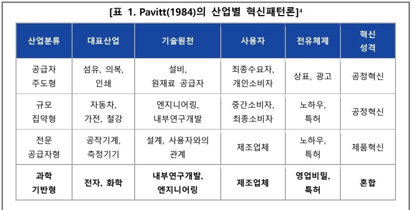
혁신
산업분류 대표산업 기술원천 사용자 전유체제성격공급자 섬유, 의복, 설비, 최종수요자, 상표, 광고 공정혁신주도형 인쇄 원재료 공급자 개인소비자규모 자동차, 엔지니어링, 중간소비자, 노하우, 공정혁신집약형 가전, 철강 내부연구개발 최종소비자 특허전문 공작기계, 설계, 사용자와의 노하우, 제조업체 제품혁신
공급자형 측정기기 관계 특허과학 내부연구개발, 영업비밀, 전자, 화학 제조업체 혼합기반형 엔지니어링 특허
개인용 혈당 측정기 산업은 대표적인 과학기반형 산업의 속성을 뚜렷이 반영
한다. 센서의 정밀도, 측정 속도, 사용자 편의성과 같은 기술적 성능 요소는 과
학기술적 혁신의 수준과 밀접하게 연관되며, 이는 곧 제품의 시장 경쟁력을 결
정짓는 핵심 요인으로 작용한다.
이 산업은 높은 기술 진입장벽(barriers to entry)과 강한 소비자 락인(lock-in) 효과로 인해 신규 진입자의 시장 진입이 제한되는 구조적 특성을 지닌다. 핵심 기
술로는 센서 설계, 분석 알고리즘 등이 있다. 제품과 소모품 간의 호환성 체계,
의료기관 시스템과의 통합성, 사용자 맞춤형 데이터 플랫폼 등은 락인 전략을
강화하는 주요 수단으로 작용한다.
디지털 헬스 전환 이후에는 개인 건강 데이터의 장기 축적이 추가적인 전환
비용(switching Cost)으로 작용하여, 사용자가 기존 브랜드에서 이탈하는 것을 더
욱 어렵게 만든다. 이와 같은 구조는 단순한 제품혁신을 넘어, 데이터 기반 생
태계 경쟁 및 기술 전유성 확보 경쟁으로 확장한다.
결과적으로 이러한 환경에서 새로운 후발 기업이 성공적으로 시장에 진입하
과학기술정책연구원(STEPI), 중소기업의 오픈 이노베이션: 모델, 방법론, 정책을 중심으로, STEPI 정책자료 2008-12, 2008.
기 위해서는 단순한 유사 제품의 생산을 넘어서야 한다. 기존 제품과의 기술적
차별성, 품질 안정성, 데이터 기반 플랫폼 전략이 결합된 형태의 고도화된 경쟁
력이 필수적이다. 이는 이 산업의 높은 기술 집약성과 락인 구조가 만들어내는
본질적 진입장벽을 극복하기 위한 핵심 조건이다.
2.1.2 시장 현황
글로벌 혈당측정기 시장은 당뇨병 유병률 증가, 고령화, 개인 건강 관리 수요
확대 등으로 인해 지속적인 성장세를 보이고 있다. 2023년 시장 규모는 약 170
억 달러에 이르며, 2030년까지 연평균 약 9%의 성장률(CAGR)을 기록하여 약
330억 달러 규모로 확대될 것으로 전망 5 된다. 시장 수요 측면에서는 북미가 가
장 큰 비중을 차지하고 있으며, 그 다음으로 유럽이 뒤를 잇는다. 아시아 태평
양 지역은 중국과 인도를 중심으로 빠른 성장세를 보이고 있다.
코로나19 팬데믹은 혈당측정기 시장의 성장을 가속화하는 촉매제로 작용하였
다. 2020년 미국 식품의약국(FDA)이 팬데믹 기간 동안 병원 환경에서의 개인용
연속혈당측정기(CGM) 사용을 한시적으로 허용하면서 규제 장벽이 완화되었고,
이는 의료 현장에서의 활용도를 높이며 시장 수요 증가에 기여하였다.
[그림 1. 기업별 글로벌 시장점유율] 6
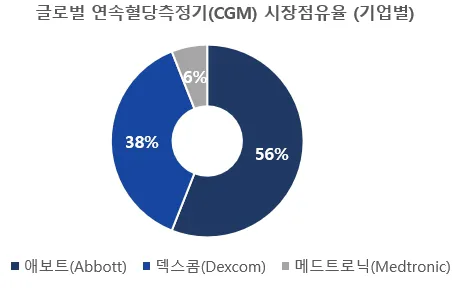
Fortune Business Insights, Blood Glucose Monitoring Systems Global Market Analysis, Insights and Forecast. 2023–2030, 2023.
DS투자증권 리서치센터, 게임 체인저를 찾아서(2023.6.1.3), 2023.
그림 1에서 볼 수 있듯이, 이 시장은 오랫동안 소수의 글로벌 대기업이 주도
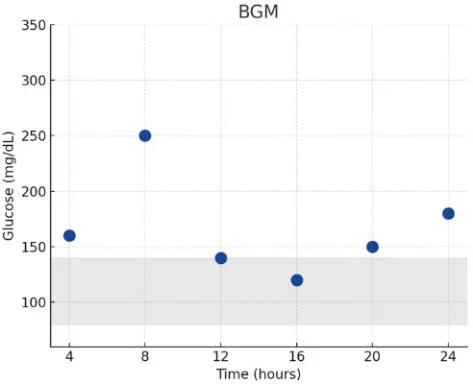
하는 과점적 구조(oligopolistic structure)를 보여왔다. 대표적 기업으로는 로슈
(Roche), 애보트(Abbott), 덱스콤(Dexcom) 등이 있다. 이들은 막대한 R&D 투자와
방대한 특허 포트폴리오, 강력한 브랜드 충성도를 기반으로 진입 장벽을 구축해
왔다.
기존 기업은 규모의 경제, 전유성, 제품 차별화 등을 통해 신규 기업의 진입
을 효과적으로 억제할 수 있다 7 . 혈당측정기기 시장은 이러한 특성이 뚜렷하게
나타나는 전형적인 사례라 할 수 있다. 센서 기술, 생체적합성 소재, 데이터 분
석 알고리즘 등 고도화된 기술 요건은 후발 주자에게 막대한 초기 투자와 높은
진입 비용을 요구한다. 기술적 진입장벽과 상당한 고정비용 구조는 후발 기업의
시장 진입을 어렵게 만들고 소수의 선도 기업들이 과점적 지위를 강화하는 요
인으로 작용한다. 이는 중소기업에게 구조적 불리함을 초래하며, 시장 진입 가
능성을 제한하는 결정적 조건으로 기능한다.
그러나 최근 헬스케어 환경의 구조적 변화와 건강관리 방식의 전환은 혈당측
정기 시장의 장기적인 수요 증가를 예고하고 있다. 산업 내 높은 진입 장벽과
과점 체제에도 불구하고, 혈당측정기 산업은 시장 확장성과 투자 가치를 동시에
갖춘 산업이므로 기술 혁신 및 제품 차별화를 기반으로 한 후발 기업의 진입
가능성은 여전히 유효하다.
2.1.3 기술 현황
체외진단(IVD) 기술은 생체 시료를 체외에서 분석하여 질병을 진단하는 기술
로, 최근 신속성과 접근성이 강조되며 현장 진단검사(Point-Of-Care Testing, POCT) 기술로의 발전이 두드러지고 있다. POCT 기술은 간단한 장비를 통해 현장에서
실시간 진단 결과를 제공할 수 있어 응급 진료, 만성질환, 감염병 대응 등에서
핵심 기술로 자리잡았다. 특히 코로나19 팬데믹을 계기로 신속·비대면 진단의
J. S. Bain, Barriers to New Competition: Their Character and Consequences in Manufacturing Industries, Harvard University Press, Cambridge, MA, 1956. 수요가 급증하며 그 중요성이 재조명되었다. POCT 기술의 대표적인 응용 분야
가 바로 혈당 측정 기술이다. 이는 높은 정확도(accuracy) 와 정밀도(precision)를
요하는 기술로서, 기술 신뢰성이 제품 경쟁력의 핵심 요소로 작용한다.
혈당 측정 기술은 크게 두 가지로 구분된다. 자가혈당측정(Blood Glucose
Monitoring, BGM)과 연속혈당측정(Continuous Glucose Monitoring, CGM)이다. BGM 기술은 손끝에서 채혈한 혈액을 혈당검사지인 스트립(Strip)에 묻혀 혈액 내 포
도당 농도를 분석하여 혈당을 측정한다. 이는 기술적 완성도와 가격경쟁력이 높
아 오랜 기간 표준 측정 방식으로 활용되어 왔다. 그러나 빈번한 채혈의 번거로
움과 통증으로 인한 불편함이 단점으로 지적된다. 또한, 환자가 혈당 수치를 지
속적으로 모니터링하기가 매우 어렵다.
반면, CGM 기술은 피부에 부착한 센서를 통해 간질액(interstitial fluid) 내 포도
당 농도를 실시간으로 측정하며, 24시간 내내 연속적인 혈당 데이터를 제공한다.
별도의 채혈 과정 없이 사용자의 혈당 추이를 시계열 데이터로 관찰할 수 있어,
당뇨병 환자의 생활 속 혈당 관리 효율성을 크게 향상시키는 기술로 평가된다.
다만, 간질액 수치와 혈중 포도당 농도 간 5분~15분 정도의 지연 시간(lag time)
이 존재 8 하여 BGM 대비 정확도가 상대적으로 낮고, 기기 비용이 BGM보다 높
다는 점이 단점으로 지적된다.
최근 의료기기 산업에서는 디지털 전환(digital transformation)이 가속화되며, 혈
당 측정 기술 역시 단일 수치 기반의 BGM 방식에서 연속 데이터 기반의 CGM
방식으로 기술의 중심축이 이동하고 있다. 이는 단순한 기능 향상이 아니라, 데
이터 기반 예측과 개인 맞춤형 헬스케어로 이어지는 산업 내 기술 패러다임 전
환으로 해석될 수 있다. CGM 기술은 연속적인 데이터 수집, 인공지능(AI) 기반
분석, 플랫폼 연계 등 복합적 기술 요소를 바탕으로 기존 BGM 기술 중심의 시
장에서 새로운 지배적 설계(dominant design)로 부상하고 있다. 표 2는 BGM과
CGM 기술의 주요 특징을 비교한 것이다.
Time Lag of Glucose From Intravascular to Interstitial Compartment in Humans, Diabetes, Volume 62, Issue 12, 2013.
[표 2. BGM과 CGM의 비교]
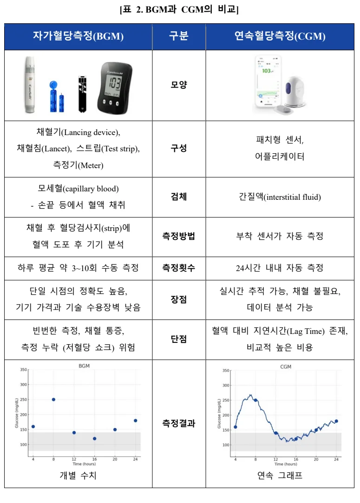
자가혈당측정(BGM) 구분 연속혈당측정(CGM)
모양
채혈기(Lancing device), 패치형 센서, 채혈침(Lancet), 스트립(Test strip), 구성어플리케이터측정기(Meter)
모세혈(capillary blood)
검체 간질액(interstitial fluid)
- 손끝 등에서 혈액 채취
채혈 후 혈당검사지(strip)에측정방법 부착 센서가 자동 측정
혈액 도포 후 기기 분석하루 평균 약 3~10회 수동 측정 측정횟수 24시간 내내 자동 측정
단일 시점의 정확도 높음, 실시간 추적 가능, 채혈 불필요, 장점기기 가격과 기술 수용장벽 낮음 데이터 분석 가능
빈번한 측정, 채혈 통증, 혈액 대비 지연시간(Lag Time) 존재, 단점
측정 누락 (저혈당 쇼크) 위험 비교적 높은 비용측정결과개별 수치 연속 그래프
혈당 측정의 핵심 기술은 공통적으로 전기화학적 원리를 기반으로 한다. 포도
당이 산화효소(glucose oxidase)의 촉매 작용을 통해 산화되면서 전자를 방출하고,
이 전자가 전자 매개체를 거쳐 전극으로 전달되어 전류를 생성하는 원리이다.
이때 발생하는 전류의 크기는 혈중 포도당 농도에 비례하며, 측정기기는 이를
분석하여 혈당 수치를 정량적으로 표시한다. 따라서 전극의 균일성, 전자 매개
체의 안정성, 효소의 활성 유지 등은 정밀한 측정의 핵심 기술 요소로 작용한
다. 최근에는 CGM 기술에 AI 기반 혈당 예측 알고리즘, 웨어러블 기기 호환성
등이 결합되며 디지털 헬스케어 및 건강 관리 플랫폼으로의 확장 가능성이 커
지고 있다. 그림 2는 전기화학 방식의 혈당 측정 기술 원리를 도식화한 것이다.
[그림 2. 전기화학 방식 혈당 측정 기술 원리] 9
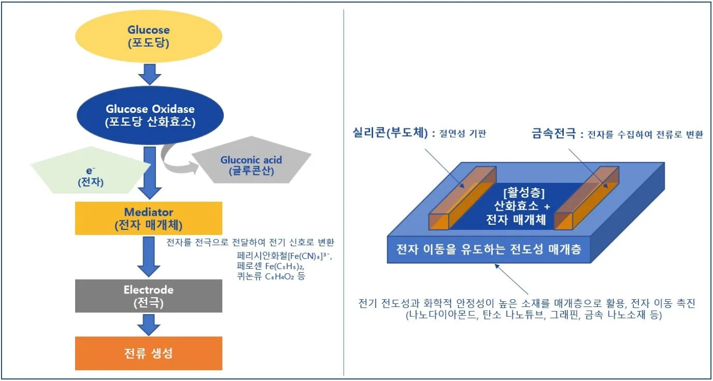
혈당 측정 기술은 고도의 정밀성과 안정성이 요구되는 전기화학 기반 기술로,
제품화를 위해서는 지속적인 R&D 축적과 고난이도의 기술 설계 역량이 필수적
이다. 최근 디지털 기술의 발전에 따라 정밀성, 사용자 편의성, 데이터 활용성
측면에서도 점진적으로 고도화되고 있다. 이러한 기술적 복잡성은 산업 내 높은
참고: 한국IR협의회, 한국기업데이터, 기술분석보고서 2019-30, 2019.
진입장벽으로 작용하며, 특히 중소기업에게는 시장 진입과 성장에 구조적인 제약으로 작용해 왔다. 기술 경쟁력의 확보는 이와 같은 시장 환경에서 중소기업이 독립적으로 생존하고 지속적인 확장을 도모하기 위한 필수 조건으로 작용한다.
2.2 연구목적(Research Question)
본 연구는 한국 중소기업이 기술 및 R&D 역량을 바탕으로 레드오션으로 분류되는 의료기기 시장에서 경쟁 우위를 확보하고, 해외 시장으로의 확장을 실현해온 전략적 과정을 분석하는 데 목적이 있다. 이를 위해 다음의 연구질문을 중심으로 사례 분석을 수행하고자 한다.
RQ1. 한국 중소기업이 높은 진입장벽을 극복하고 글로벌 대기업이 과점한
시장에 성공적으로 진입할 수 있었던 핵심 요인은?
RQ2. 레드오션 시장의 후발주자가 한국 선도 기업으로 도약하고 해외 시장
에서 지속적으로 확장할 수 있었던 전략은?
그림 3은 본 연구의 전반적인 분석 흐름을 도식화한 것이다.
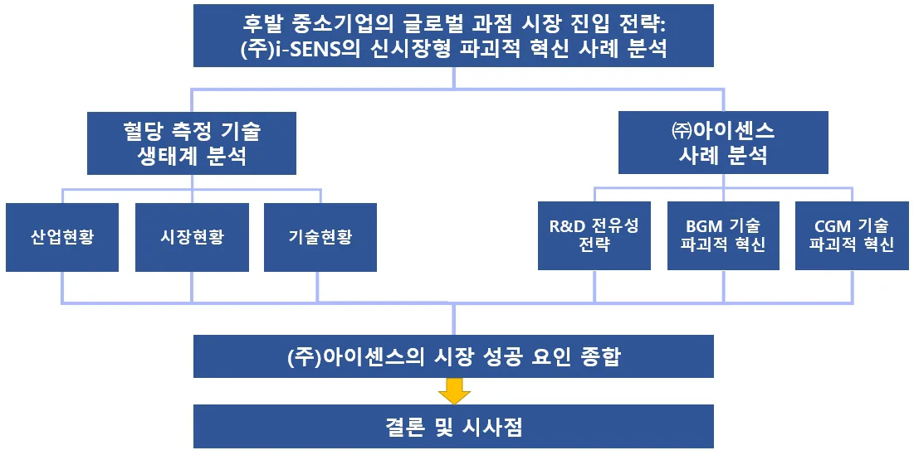
[그림 3. 연구흐름도]
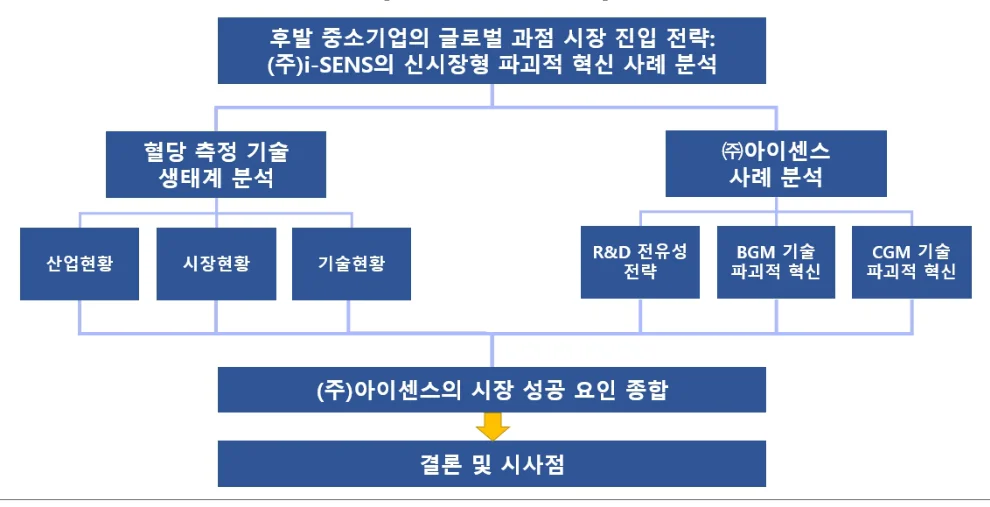
제 3 장 연구대상
3.1 기업 개요: ㈜아이센스
[표 3. ㈜아이센스 기업개요]
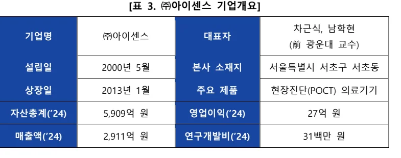
차근식, 남학현
기업명 ㈜아이센스 대표자 (前 광운대 교수)
설립일 2000년 5월 본사 소재지 서울특별시 서초구 서초동
상장일 2013년 1월 주요 제품 현장진단(POCT) 의료기기
자산총계(’24) 5,909억 원 영업이익(’24) 27억 원
매출액(’24) 2,911억 원 연구개발비(’24) 31백만 원
㈜아이센스는 2000년에 설립되어 전기화학 기술 및 바이오센서 기술을 기반으로 의료용 센서 및 진단기기를 개발·제조하는 기업이다. 동사는 의료기기 산업 내 체외진단(IVD) 산업에 속하며, 혈당측정기를 포함한 현장진단(POCT) 의료기기를 중심으로 제품을 생산 및 판매하고 있다. 주요 제품의 구성은 표 4에제시되어 있다. 그림 4에 따르면 2024년 혈당측정기 부문이 전체 매출의 약 85%를 차지하며, 나머지 약 15%는 당화혈색소 분석기, 혈액가스 분석기 등의기타 POCT 제품군이 구성하고 있다.
[표 4. ㈜아이센스의 주요 제품]
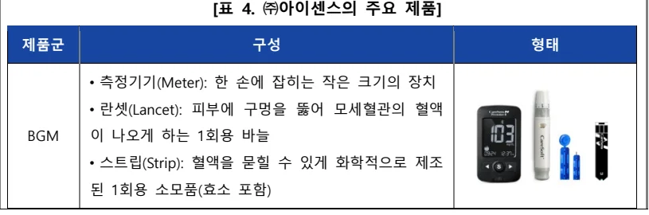
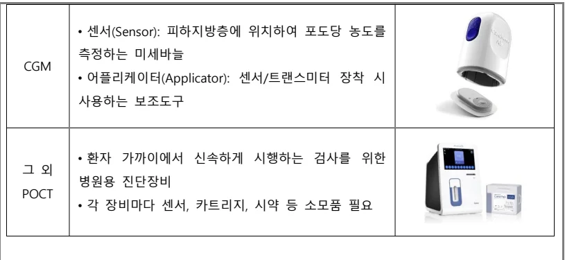
제품군 구성 형태
- 측정기기(Meter): 한 손에 잡히는 작은 크기의 장치
- 란셋(Lancet): 피부에 구멍을 뚫어 모세혈관의 혈액
BGM 이 나오게 하는 1회용 바늘
- 스트립(Strip): 혈액을 묻힐 수 있게 화학적으로 제조
된 1회용 소모품(효소 포함)
- 센서(Sensor): 피하지방층에 위치하여 포도당 농도를
측정하는 미세바늘
CGM
- 어플리케이터(Applicator): 센서/트랜스미터 장착 시
사용하는 보조도구
- 환자 가까이에서 신속하게 시행하는 검사를 위한
그 외병원용 진단장비
POCT
- 각 장비마다 센서, 카트리지, 시약 등 소모품 필요
[그림 4. ㈜아이센스 품목별 매출 비중(2017~2024)] 10
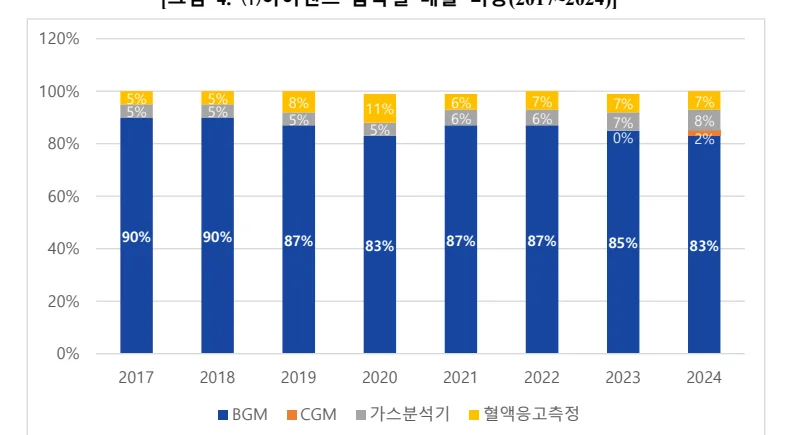
120%
100% 5% 5% 8% 6% 7% 7% 7%
5% 5% 11%
5% 6% 6% 7% 8%
5%
80% 0% 2%
60%
90% 90% 87% 87% 87% 85%
40% 83% 83%
20%
0%
2017 2018 2019 2020 2021 2022 2023 2024 BGM CGM 가스분석기 혈액응고측정
설립 초기부터 R&D를 통한 기술혁신을 기업 성장의 핵심 동력으로 삼은 ㈜
아이센스는 기업 설립과 동시에 부설연구소를 설립하였고, 2003년에는 자사 최
초의 혈당측정기 제품인 ‘케어센스(CareSens)’ 시리즈를 출시하였다. 해당 제품
은 기존 제품 대비 필요한 혈액 샘플량을 획기적으로 줄이고, 측정 속도를 향상
시킨 기술적 성과로 시장의 주목을 받았다.
㈜아이센스 Investor Relations 2024 Q4, https://i-sens.irpage.co.kr/ 2004년에는 유럽 통합규격인증마크(CE)와 의료기기 품질경영시스템 국제표준
(ISO 13485)을 획득하며 제품의 품질과 안정성을 국제적으로 인정받았고, 같은
해 국내 기흥 공장을 준공함으로써 대량 양산 체계를 갖추었다. 이후 미국, 중
국, 유럽, 뉴질랜드 등에 현지 법인 및 생산거점을 설립하며 글로벌 진출을 본
격화하였고, 원주, 송도, 중국 공장 준공을 통해 생산 역량을 지속 확대하였다.
2012년에는 뉴질랜드 정부의 자가혈당측정기 독점 공급업체로 선정되며 제품의
신뢰성과 기술 경쟁력을 대외적으로 입증하였다.
2010년대 중반 이후 ㈜아이센스는 한국 혈당측정기 시장에서 점유율 1위를
기록하며 한국 시장에서 선도적 위치를 점하게 되었다. 그림 5에서 볼 수 있듯
이 매출 또한 지속적인 성장세를 보이며 경영의 안정성과 확장성을 동시에 확
보하였다.
2023년에는 연속혈당측정시스템(CGM) ‘케어센스 에어(CareSens Air)’를 출시하
며 제품 포트폴리오를 확장하였다. 같은 해 인천 송도 제2공장 준공을 통해 생
산 능력을 더욱 강화하였고, 미국의 CGM 전문 기업 AgaMatrix를 인수하여 해
외 기술 역량과 시장 접근성을 확보하며 글로벌 경쟁력을 한층 공고히 하였다.
[그림 5. ㈜아이센스 매출액 추이(2011~2024)] 11
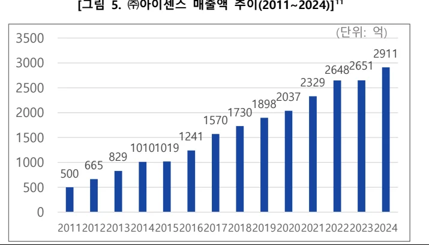
(단위: 억)
3000 2651 2000 1730 1500 1241 1000 665
㈜아이센스, 사업보고서, 2011~2024.
3.2 핵심 역량
㈜아이센스의 핵심 역량은 지속적으로 축적된 연구개발(R&D) 기반의 기술
전유성 확보와 이를 바탕으로 한 전략적 기술 상용화 역량이다. 본 연구는 핵심
역량을 분석하기 위해, Prahalad와 Hamel(1990)이 제시한 핵심 역량의 세 가지
조건인 시장 접근성, 모방 불가능성, 고객 가치 12를 이론적 틀로 설정하였다.
시장 접근성(potential access to a wide variety of markets) 측면에서, ㈜아이센스의고정밀 전기화학 센서 기술과 알고리즘 기술은 다양한 시장으로의 진입이 가능
하다. 자가혈당측정기(BGM)와 연속혈당측정기(CGM), 전해질 분석기, 당화혈색
소 분석기 등 다양한 센서 기반 체외진단(POCT) 기기 시장에 접근할 수 있으
며, 최근 웰니스 트렌드와 디지털 헬스케어 수요 증가에 따라 헬스케어 전반으
로의 확장 가능성도 높아지고 있다.
모방 불가능성(difficulty of imitation) 측면에서, ㈜아이센스는 기술 전유성과 독
립성을 확보하고 있다. 센서와 분석 알고리즘 등의 핵심 기술을 내부에서 자체
개발하고 있으며, 이에 대한 국내외 특허를 다수 보유함으로써 제도적 보호 체
계를 구축해왔다. 이러한 전유성은 장기간의 연구개발(R&D) 축적을 바탕으로
형성되었으며, 공정 노하우, 설계 역량, 품질 시스템이 통합된 복합적 자산에 의
해 뒷받침된다. 의료기기 산업은 고도의 신뢰성과 안정성이 요구되는 분야로,
이러한 전방위적 보호 체계는 기술뿐 아니라 생산 시스템 전반의 모방을 어렵
게 만들어, 실질적인 진입장벽으로 작용하고 있다.
고객 가치(significant contribution to perceived customer benefits) 측면에서, ㈜아이센스는 단순한 혈당 측정을 넘어 사용자 중심의 통합적 가치를 제공하고 있다.
자체 개발한 센서와 알고리즘을 기반으로 높은 신뢰도의 측정 결과를 제공할
뿐만 아니라, 쉽게 연동 가능한 데이터 플랫폼을 통해 사용자가 자신의 건강 정
보를 장기적으로 축적·관리·분석할 수 있도록 지원한다. 이는 기능적 효용을 넘
C. K. Prahalad and G. Hamel, "The core competence of the corporation," Harvard Business Review, vol. 68, no. 3, pp. 79–91, 1990.
어서 행동 변화 유도, 자가 건강 관리 역량 강화 등 경험적·정서적 가치를 창출
하며, 데이터 기반 부가가치 창출 전략은 차별화된 고객 가치 실현으로 이어진
다.
이처럼 ㈜아이센스는 지속적인 연구개발(R&D)을 통해 확보한 전기화학적 센
서 기술을 기반으로 다양한 제품군과 플랫폼으로의 확장을 실현하고 있으며, 사
용자 중심의 전략을 통해 차별화된 고객 가치를 창출하고, 복합적 보호체계를
통해 강력한 전유성과 모방 불가능성을 유지하고 있다. 이는 Prahalad와
Hamel(1990)이 제시한 핵심 역량의 세 가지 조건을 모두 충족하는 사례로, ㈜아
이센스의 경쟁우위가 단순한 기술 보유를 넘어, 기술 전유성과 전략적 기술 상
용화 역량에 기초하고 있음을 보여준다.
이러한 역량은 글로벌 대기업들이 과점한 의료기기 시장에서 중소기업 후발
주자로서 파괴적 혁신을 실현할 수 있었던 핵심 원동력으로 작용하였다.
제 4 장 이론적 배경
4.1 파괴적 혁신(disruptive Innovation)
파괴적 혁신 이론은 1990년대 중반 크리스텐슨(Christensen)의 논문에서 출발
하여 이후 다양한 학자들에 의해 이론적으로 확장되고 정교화된 개념이다.
Christensen은 초기 논문에서 기존의 성공적인 기업들이 새로운 기술 변화에 실
패하는 이유를 설명하고자 했으며, 이후 『The Innovator’s Dilemma』(1997)를 통해이론을 체계화하였다. 그는 성공한 기업들이 고객의 요구에 충실한 ‘좋은 경영’
을 수행한 결과 오히려 새로운 기술에 둔감해지고, 시장의 주도권을 신생 기업
에 넘겨주는 현상을 ‘혁신가의 딜레마’로 명명하였다 13.
이러한 문제의식은 1995년 Rosenbloom과의 공동 논문에서 먼저 제기되었다.
C. M. Christensen, The Innovator’s Dilemma: When New Technologies Cause Great Firms to Fail, Harvard Business School Press, Boston, 1997.
이들은 기술 수용 여부가 기술 자체의 절대적 성능에 의해 결정되는 것이 아니
라, 사용자가 속한 ‘가치 네트워크(value network)’ 내에서 해당 기술이 그들의 가
치 기준을 얼마나 충족하는가에 따라 달라진다는 점을 강조하였다 14.
이어서 Bower와의 논문에서는 기존 기업이 신기술에 주목하지 않는 이유를
조직 내부의 자원 배분 메커니즘과 고객 중심 전략에서 찾았다. 수익성과 기존
고객 요구를 기준으로 자원을 배분하는 경영 시스템은 초기 수요가 미약한 기
술에 자원을 투자하지 않게 만들며, 이러한 의사결정은 결국 기존 기업의 혁신
실패로 이어진다는 분석이었다 15.
이러한 배경을 바탕으로, Christensen은 『The Innovator’s Dilemma』(1997)에서 파괴적 기술(disruptive technology)이라는 개념을 본격적으로 제시하였다. 파괴적 기
술이 초기에는 기존 시장의 성능 기준을 충족하지 못하지만, 저렴하고 단순한
형태로 새로운 시장을 창출하고 이후 성능 개선을 통해 기존 시장을 점진적으
로 대체하게 되는 과정을 설명하였다. 이러한 기술은 기존 기업의 가치 기준 바
깥에서 수용되며, 새로운 고객층과 시장 논리를 형성함으로써 기존 산업 구조를
전환시킨다 16.
이후 Christensen과 Raynor는 『The Innovator’s Solution』(2003)에서 파괴적 혁신을 두 가지 유형으로 구분하였다. 기존 시장의 과잉 성능에 만족하지 않는 소비
자층을 대상으로 하는 '로엔드형 파괴(low-end disruption)'는 기존 대비 성능은 낮
고 단순하지만 저렴한 제품을 제공함으로써 하위 시장을 공략하는 전략이다. '신
시장형 파괴(new-market disruption)'는 기존 제품이 너무 비싸거나 복잡해서 시장
에 접근하지 못했던 비소비자(non-consumers)를 대상으로, 새로운 가치를 제시하
C. M. Christensen and R. S. Rosenbloom, "Explaining the attacker's advantage: Technological paradigms, organizational dynamics, and the value network," Research Policy, vol. 24, no. 2, pp. 233–257, 1995.
C. M. Christensen and J. L. Bower, "Customer power, strategic investment, and the failure of leading firms," Strategic Management Journal, vol. 17, no. 3, pp. 197–218, 1996. C. M. Christensen, The Innovator’s Dilemma: When New Technologies Cause Great Firms to Fail, Harvard Business School Press, Boston, MA, 1997.
는 제품을 통해 새로운 수요를 창출하는 전략 17 이다. 로엔드형은 기존 시장 내
하위 세그먼트를 흡수하는 데 주력하고, 신시장형은 아예 다른 가치 기준을 지
닌 고객층을 창출한다는 점에서 전략적 접근이 다르다.
그 연장선상에서 Christensen 등(2004)은 『Seeing What’s Next』에서 파괴적 혁신이론을 산업 변화 예측의 분석 틀로 확장하였다. 가치 사슬의 변화, 고객 가치
기준의 이동, 과잉 충족된 세그먼트의 존재와 같은 징후를 통해 파괴적 혁신이
발생할 가능성을 사전에 식별할 수 있다고 보았다 18 . 이러한 분석은 기존 제품
을 사용하지 못했던 소비자를 대상으로 새로운 시장을 창출하려는 기업에게 전
략적 시사점을 제공할 수 있다.
이론의 확산과 함께, 파괴적 혁신 개념은 학계 내에서 다양한 비판과 재해석
의 대상이 되었다. Danneels(2004)는 파괴적 혁신 개념이 학계와 실무에서 널리
사용되면서 이론적 복잡성이 간과되고 개념이 지나치게 확산되었음을 지적하며,
그 일관성과 예측 가능성을 높이기 위한 분류 체계 구축과 이론적 정교화가 필
요하다고 주장하였다 19 . Markides(2006)는 모든 파괴적 혁신이 동일하지 않고 파
괴적 기술 혁신과 비즈니스 모델 혹은 제품 혁신은 근본적으로 다른 현상이므
로 구분해서 이론화할 필요가 있다고 주장하였다 20.
이러한 논의의 흐름 속에서 Christensen(2006)는 파괴적 혁신 이론의 개념적
오용을 지적하며, 기술 자체보다 그것이 기존 기업의 비즈니스 모델과 맺는 관
계에서 파괴성이 발생한다고 보았다. 그는 파괴적 혁신의 예측력을 높이기 위해
시장 진입 경로, 수익 구조, 조직 자원 배분 등의 맥락적 조건을 고려한 이론
C. M. Christensen and M. E. Raynor, The Innovator’s Solution: Creating and Sustaining Successful Growth, Harvard Business School Press, Boston, MA, 2003.
C. M. Christensen, S. D. Anthony, and E. A. Roth, Seeing What’s Next: Using the Theories of Innovation to Predict Industry Change, Harvard Business School Press, Boston, MA, 2004. E. Danneels, "Disruptive technology reconsidered: A critique and research agenda," Journal of Product Innovation Management, vol. 21, no. 4, pp. 246–258, 2004. C. Markides, "Disruptive innovation: In need of better theory," Journal of Product Innovation 정교화가 필요하다고 강조하였다. 21.
Schmidt와 Druehl(2008)은 파괴적 혁신 개념의 모호성을 해소하기 위해 시장
침투 경로에 따른 네 가지 혁신 유형을 제시하였다. 이들은 혁신이 기존 시장의
상단에서 출발하는 지속적 혁신과 달리, 시장 하단이나 별도의 세그먼트에서 출
발해 점진적으로 확산되는 경우에 파괴적 혁신으로 정의될 수 있다고 보았다.
특히 기존 시장의 저가층을 공략하는 ‘Fringe-market’, 기존 시장과 분리된 신시
장에서 출발하는 ‘Detached-market’, 기존 시장 하단을 직접 공략하는 ‘Immediate
disruption’을 구분하며, 파괴적 혁신의 성격은 기술 자체보다 시장 진입 지점과
확산 경로에 의해 결정된다고 주장하였다. 22
Yu와 Hang(2010)은 파괴적 혁신 이론의 개념 정의, 예측 가능성, 실현 전략을
중심으로 이론의 발전과 한계를 검토하였다. 이들은 파괴적 혁신이 기술 자체보
다 시장 진입 경로, 조직 구조, 고객 지향성 등 맥락적 요인에 의해 결정된다고
보았다. 동시에 파괴적 혁신의 성패가 맥락에 달려 있음에도 불구하고, 혁신을
가능케 하는 기술이 어떻게 창출될 수 있는지에 대한 이론적 논의가 부족하다
고 지적하였다. 또한 파괴적 혁신을 반복 가능한 과정으로 만들기 위한 조직 내
부의 조건과 전략적 설계에 대한 연구가 필요하다고 강조하였다 23.
Christensen et al.(2015)은 파괴적 혁신 개념이 혼용되고 있음을 지적하고, 파괴
적 혁신은 기존 시장에서 과잉 충족하고 있는 고객층을 겨냥하는 ‘로엔드(low-
end)’형과, 기존 제품을 사용할 수 없던 비소비자를 대상으로 새로운 수요를 창
출하는 ‘신시장(new-market)’형으로 구분된다고 재정의하였다. 이들은 파괴적 혁
신이 기술적 우월성이 아니라, 기존 시장이 대응하기 어려운 방식으로 비주류에
서 출발해 주류를 잠식하는 경로에 의해 정의된다고 보았다. 이러한 개념적 명 Management, vol. 23, no. 1, pp. 19–25, 2006.
C. M. Christensen, "The ongoing process of building a theory of disruption," Journal of Product Innovation Management, vol. 23, no. 1, pp. 39–55, 2006.
G. M. Schmidt and C. T. Druehl, "When is a disruptive innovation disruptive?" Journal of Product Innovation Management, vol. 25, no. 4, pp. 347–369, 2008. D. Yu and C. C. Hang, "A reflective review of disruptive innovation theory," International Journal of Management Reviews, vol. 12, no. 4, pp. 435–452, 2010. 확성이 기업의 전략 수립과 이론의 예측력 확보에 필수적이라고 강조하였다 24.
파괴적 혁신 이론은 Christensen의 초기 연구를 바탕으로, 로엔드형과 신시장
형의 유형 구분(Christensen & Raynor, 2003), 산업 변화 예측 도구로서의 확장
(Christensen et al., 2004), 개념 오용에 대한 정정과 조건 재정립(Christensen et al., 2015) 등을 통해 이론적 외연을 넓혀왔다. 또한 Danneels(2004), Markides(2006) 등의 비판과 Schmidt와 Druehl(2008), Yu와 Hang(2010)의 실증적 연구를 거치며적용 조건이 정교화되었다. 본 연구는 이러한 이론적 논의에 기반하여, ㈜아이
센스의 사례를 통해 파괴적 혁신 이론이 중소기업의 신시장 창출 전략에 어떻
게 적용될 수 있는지를 실증적으로 보여준다.
4.2 전유성(appropriability)
전유성(appropriability)은 기술 혁신이 기업의 수익으로 이어지기 위해 필요한
조건을 설명하는 개념으로, Teece(1986)에 의해 이론적으로 체계화되었다. 이후
전유성은 기업의 혁신성과 수익성 간의 연결을 설명하는 핵심 개념으로 자리
잡았다. 전유성 수단은 산업별로 상이하고 단일한 보호 방식이 아닌 전략적·조
직적 요인이 복합적으로 작용한다는 점이 실증 연구를 통해 확인되어 왔다.
Teece(1986)는 기술혁신을 선도한 기업이 반드시 경제적 성과를 거두는 것은
아니며, 혁신의 수익은 종종 모방자나 보완 자산(complementary assets)을 보유한
기업에 귀속된다고 분석하였다. 그는 혁신의 수익화 가능성을 결정짓는 요인으
로 전유성 체제(appropriability regime), 보완 자산, 지배적 설계(dominant design)를제시하였다. 특히 기술 보호가 어려운 경우일수록 혁신 기업이 생산, 유통, 마케
팅 등 보완 자산을 직접 통제하거나 전략적으로 연계하지 않으면 수익을 잃을
수 있다고 강조하였다. 그는 이러한 조건들을 종합적으로 고려하여, 기업이 기
술 상용화 전략으로 내부화(integration), 협업(collaboration), 라이선싱(licensing) 중가장 효과적인 전략을 선택해야 한다고 제안하였다 25.
C. M. Christensen, M. E. Raynor, and R. McDonald, "What is disruptive innovation?" Harvard Business Review, vol. 93, no. 12, pp. 44–53, 2015.
D. J. Teece, Profiting from technological innovation: Implications for integration, collaboration, Levin et al.(1987)은 130개 미국 제조업 R&D 책임자들을 대상으로 설문조사를
실시해, 산업별 전유성 조건과 특성을 실증적으로 분석하였다. 이들은 특허는
일부 산업(특히 의약·화학 등)에서 효과적이며, 대부분의 산업에서는 리드타임,
학습곡선, 영업·서비스 등 비특허 기반 수단이 더 효과적인 전유성 메커니즘으
로 작용한다고 보았다. 특히 공정 기술의 경우 특허의 전유 효과는 낮고 모방도
쉬운 반면, 제품 기술은 상대적으로 특허 효과가 높게 평가되었다. 또한 모방
비용과 소요 시간은 산업마다 크게 다르며, 전유성 수단의 조합 역시 산업 구조
와 기술 특성에 따라 달라진다고 결론지었다 26 . 본 연구는 이후 전유성 이론의
정립과 산업별 전략 수립, 정책 설계의 실증 기반을 제시하였다.
한편, Cohen et al.(2000)은 미국 제조업 R&D 조직을 대상으로 한 실증조사를
통해 기업들이 기술 혁신의 수익을 보호하기 위해 영업비밀, 선점, 보완 자산
등 다양한 전유성 수단을 활용하고 있으며, 특허는 제품 보호 외에도 경쟁사 차
단, 소송 방어, 라이선스 교환 등의 전략적 도구로 사용된다고 분석하였다. 특히
기술이 복합적인 산업에서는 대형 특허 포트폴리오를 통해 시장 접근권을 확보
하려는 경향이 강하게 나타났으며, 이는 특허 출원 증가의 주요 배경으로 지적
된다 27.
Arora et al.(2001)은 기술이 기업 내부에서만 활용되는 것이 아니라, 외부 기업
에 이전되고 시장에서 거래되는 자산이 될 수 있음을 이론적·실증적으로 분석
하였다. 이들은 기술 시장의 성장은 기업 간 라이선싱, 기술 이전, R&D 아웃소
싱 등의 증가와 밀접하게 연결되어 있으며, 기술 거래의 성패는 기술의 전유 가
능성, 거래비용, 보완 자산의 분리 가능성 등 제도적·전략적 조건에 따라 결정
된다고 보았다. 기술 시장은 혁신 활동의 분업화를 촉진하고 후발 기업에게 진 licensing and public policy, Research Policy, vol. 15, no. 6, pp. 285–305, 1986. R. C. Levin, A. K. Klevorick, R. R. Nelson, and S. G. Winter, Appropriating the returns from industrial research and development, Brookings Papers on Economic Activity, vol. 1987, no. 3, pp. 783–831, 1987.
W. M. Cohen, R. R. Nelson, and J. P. Walsh, Protecting their intellectual assets: Appropriability conditions and why U.S. manufacturing firms patent (or not), NBER Working Paper No. 7552, National Bureau of Economic Research, Cambridge, MA, 2000. 입 기회를 제공하는 반면, 기술 이전으로 인한 경쟁 강화나 내부 역량 약화의
리스크도 존재한다고 지적하였다. 이 책은 기술의 내부 활용과 시장 거래 사이
의 선택이 기업 전략에 어떻게 연결되는지를 설명한다 28.
Teece(2006)는 기술 혁신으로부터 수익을 확보하기 위한 조건을 설명한 1986
년의 이론을 되짚으며, 전유성 체제, 보완 자산, 진입 시점, 그리고 비즈니스 모
델 등 전략적 변수들이 수익 분배에 미치는 영향을 체계적으로 분석하였다. 그
는 혁신의 성공은 단지 기술 자체보다도 이를 상업화하는 과정에서 기업이 보
완 자산을 어떻게 확보·통제하고, 지식의 모방 가능성과 지배적 설계의 등장 시
점을 어떻게 전략적으로 활용하는가에 달려 있다고 보았다 29.
이처럼 전유성은 기술 보호를 넘어 기업의 전략적 선택과 긴밀히 연결된 개
념으로 발전해 왔다. 본 연구는 이러한 이론적 틀을 바탕으로 ㈜아이센스의 사
례를 분석하고자 한다. ㈜아이센스는 특허, 품질 인증, 생산·유통 인프라 등 다
양한 전유성 수단을 복합적으로 활용함으로써, 기술 기반 중소기업도 글로벌 과
점 시장에서 경쟁우위를 확보할 수 있음을 보여준다. 이는 전유성 이론의 적용
가능성과 설명력을 확장하는 데 기여하는 실증적 사례로 평가될 수 있다.
A. Arora, A. Fosfuri, and A. Gambardella, Markets for Technology: The Economics of Innovation and Corporate Strategy, MIT Press, Cambridge, MA, 2001.
D. J. Teece, “Reflections on ‘Profiting from innovation’,” Research Policy, vol. 35, no. 8, pp. 1131– 1146, 2006.
제 5 장 사례연구
5.1 연구개발(R&D) 기반 핵심 전략
5.1.1 기초과학 연구개발(R&D) 기반 기술력 확보
㈜아이센스는 창업 초기부터 기초과학에 기반한 연구개발(R&D)을 기업 경쟁
력의 핵심 축으로 설정하였다. 창업자들은 대학 내 화학 센서 공동연구 그룹을
이끌며 1995년 정부의 기초과학 연구지원 사업에 선정되었고, 이를 계기로 실험
실 수준을 넘어 상업적 응용이 가능한 전기화학 센서 기술 개발에 착수하였다.
해당 연구는 단순한 학술 성과를 넘어 실용화 가능한 기술로 전환되었으며, 이
는 이후 ㈜아이센스가 산업에 성공적으로 진입하는 데 있어 핵심적인 기술 기
반이 되었다.
설립 이후에도 ㈜아이센스는 고정밀 센서 기술의 내부화를 위해 지속적인
R&D 투자를 이어왔으며, 기업 설립과 동시에 부설연구소를 설립하고 이를 ‘센
서 연구소’와 ‘디바이스 연구소’로 이원화함으로써 기능별 연구체계를 체계화하
였다. 2024년 기준 전체 인력의 15% 이상이 연구직으로 구성되어 있으며, 표 5
에서 볼 수 있듯이 매출액 대비 연구개발 투자 비율도 약 10% 이상을 유지하
고 있다. 이와 같은 연구개발 중심 경영 전략은 기술 차별화와 진입장벽 확보
측면에서 실질적인 경쟁 우위를 창출해 왔다.
[표 5. 매출액 대비 연구개발비용(2019~2024)] 30
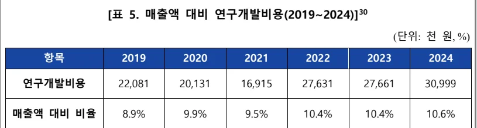
(단위: 천 원, %)
연구개발비용 22,081 20,131 16,915 27,631 27,661 30,999
매출액 대비 비율 8.9% 9.9% 9.5% 10.4% 10.4% 10.6%
㈜아이센스, 사업보고서, 2021~2024.
㈜아이센스의 기술력은 객관적 평가에서도 국제적 신뢰를 확보하고 있다. 그
림 6에 제시된 바와 같이, 호주에서 발표된 자가혈당측정기(BGM)의 정확도 비
교 논문에 따르면 아이센스의 대표 제품인 ‘CareSens’는 American Diabetes
Association(ADA)의 권장 기준인 오차율 ±5% 미만의 bias를 충족한 유일한 제품
으로 보고되었다(Bulsara, Holman, & Davis, 2006). 이는 기초과학 기반의 지속적연구개발과 정량적 품질관리 시스템이 결합된 성과로, 자사 기술의 정밀성과 신
뢰성을 입증하는 대표적인 사례다.
[그림 6. ㈜아이센스 제품의 정확도에 관한 논문 자료] 31
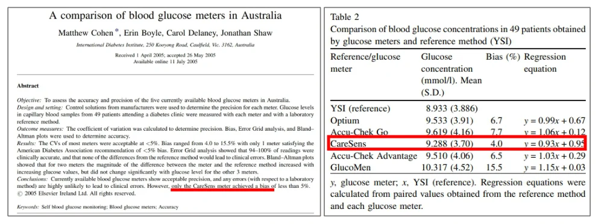
기초과학 기반의 R&D는 ㈜아이센스가 자사 고유의 전기화학 센서 기술을 축
적하고, 고도화된 기술 전유성을 확보하며 글로벌 시장의 진입장벽을 완화하고
경쟁우위를 강화하는 핵심 전략으로 기능하고 있다. 지속적인 R&D 투자와 연
구조직의 내실화는 기술 혁신을 가속화하고, 장기적으로는 자가혈당측정기
(BGM)에서 연속혈당측정기(CGM)로의 기술 전환 기반을 마련함으로써 차세대
제품군의 시장경쟁력을 제고하는 데 기여하고 있다. 또한 이러한 기술력 축적은
자체 브랜드 제품 출시와 생산·유통 구조의 내재화로 이어지는 기반이 되었으
며, 기술 중심 기업으로서의 성장성과 수익 창출 능력을 외부에 입증하며 2013
년 기업 공개(IPO)을 실현하는 데 중요한 역할을 하였다.
M. Cohen, E. Boyle, C. Delaney, J. Shaw, “A comparison of blood glucose meters in Australia,” Diabetes Research and Clinical Practice, vol. 71, no. 2, pp. 113-118, Feb. 2006.
5.1.2 비즈니스모델의 전략적 전환과 내부화
㈜아이센스는 설립 초기 기술 중심의 진입 전략을 수립하고자 하였으며, 기술
라이선싱 기반의 비즈니스 모델을 우선적으로 선택하였다. 창업자는 체외진단
(IVD) 산업의 높은 성장 가능성과 전기화학 센서 기술의 범용성에 주목하였으
며, 대학 내 화학 센서 공동연구 그룹을 조직하고 정부의 기초과학 연구개발
(R&D) 지원을 받으며 독자 기술을 체계적으로 축적하였다. 이 과정에서 확보된
센서 기술은 학술적 성과를 넘어 상업적 응용이 가능한 플랫폼 기술로 발전하
였으며, 당시 한국 중소기업으로서는 이례적인 수준의 기술 기반을 확보할 수
있었다.
그러나 해당 기술이 곧바로 수익 창출로 이어지기에는 자본력과 제조·유통
인프라 등 핵심 보완 자산(complementary assets)이 부족했다. 이러한 제약으로 인
하여 ㈜아이센스는 초기에 기술 자체를 외부 기업에 제공하는 라이선싱 방식으
로 상업화를 추진하였다. 이 전략은 제품화 및 유통에 필요한 자산을 보유하지
않은 상황에서 기술의 시장 적합성을 검증하고, 초기 자본을 확보할 수 있는 합
리적인 대안이었다. 글로벌 체외진단 기업들과의 협력을 통해 기술을 이전하고
수익을 창출하는 방식으로 ㈜아이센스는 기술 신뢰도와 사업 기반을 점진적으
로 강화해 나갔다.
이와 같은 전략 선택은 Teece(1986)가 제시한 기술혁신의 전유성 이론과 일치
한다. 해당 이론에 따르면, 기업이 기술혁신으로부터 수익을 전유하기 위해서는
기술의 보호뿐만 아니라 기술 상용화를 위해 필요한 보완 자산을 확보하는 것
이 중요하다 32 . ㈜아이센스는 설립 초기부터 특허와 노하우 등 기술적 전유 수
단을 확보하기 위해 노력하였으나, 보완 자산은 외부 기업에 의존할 수밖에 없
었다. 이에 따라 라이선싱 중심의 상업화 전략을 우선 채택하였고, 이를 통해
기술의 상업적 가치를 입증하며 자본과 신뢰도를 축적해 나갔다.
시간이 지남에 따라 기술의 정밀도와 신뢰성이 객관적으로 입증되고, 수익 기
D. J. Teece, Profiting from technological innovation: Implications for integration, collaboration, licensing and public policy, Research Policy, vol. 15, no. 6, pp. 285–305, 1986. 반이 확보되면서 ㈜아이센스는 비즈니스 모델의 전략적 전환을 단행하였다. 혈당측정기와 같이 글로벌 수요가 높고 기술 진입장벽이 높은 분야에 집중하기로결정하였으며, 축적된 자본과 기술 신뢰도를 바탕으로 자체 생산 설비를 구축하였다. 2003년에는 BGM 제품인 CareSens 시리즈를 자사 브랜드로 출시하며, 기존기술 중심 라이선싱 모델에서 직접 제조·판매하는 비즈니스 모델로 전환하였다.
이는 기술 내재화와 수익 기반 강화를 동시에 이루며 외부 투자자에게 기술 기반 기업으로서의 성장성과 수익 창출 능력을 입증하는 계기가 되었으며, ㈜아이센스는 이를 바탕으로 일반 상장 요건을 충족하여 2013년 코스닥 시장에 성공적으로 상장하였다.
이는 자체 기술력을 바탕으로 제조 및 유통 구조를 내재화한 후 상장에 성공한 국내 기술 기반 의료기기 기업의 사례로, 이후 아이센스는 글로벌 시장에도신속하게 진입할 수 있었다. 이러한 내부화(integration) 전략은 기술혁신의 수익실현을 자사 내로 전유하는 구조를 정착시켰다는 점에서 중요한 의미를 갖는다.
기술 개발 중심의 조직에서 시장 주도형 기업으로의 도약은 단순한 운영 구조의 변경을 넘어, 기술 기반 경쟁 우위를 장기적으로 확보하기 위한 전략적 전환이었다.
5.1.3 기술 전유성과 경쟁 우위 확보
㈜아이센스는 전기화학적 바이오센서 기술을 중심으로 한 전유성 확보 전략을 통해 산업 내 경쟁우위를 강화해왔다. 이는 지속적인 연구개발(R&D) 투자와이를 기반으로 한 특허 포트폴리오의 확장에 기반한 것으로, 기술 보호와 함께시장 진입장벽을 제도적으로 구축하는 데 핵심적인 역할을 하였다. 연도별 특허등록 현황을 보여주는 그림 7에 따르면, ㈜아이센스는 국내외에서 안정적이고일관된 특허 출원 활동을 지속하고 있음을 알 수 있다.
[그림 7. 연도별 특허 등록 현황(2012~2024)] 33
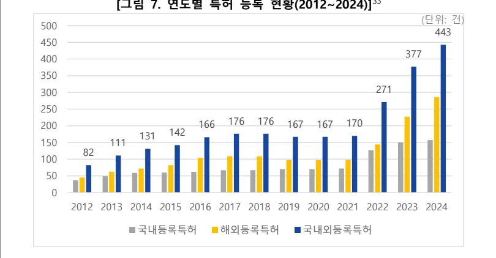
(단위: 건)
300 271 200 166 176 176 167 167 170 131 142 150 111 2012 2013 2014 2015 2016 2017 2018 2019 2020 2021 2022 2023 2024 국내등록특허 해외등록특허 국내외등록특허
지속적인 R&D 활동에 기반한 특허 중심의 전유 전략은, 단순한 권리 보호를
넘어 경쟁사의 모방을 어렵게 하고 기술 격차를 구조적으로 고착화하는 수단으
로 작동하였다. 특히 의료기기 산업은 지식재산권 분쟁이 빈번하게 발생하는 산
업 구조적 특성을 가지므로, 강력한 특허 포트폴리오를 확보하는 것은 국제 계
약, 제품 수출, 기술 협상 등에서 실질적인 교섭력을 확보하는 수단이 된다. ㈜
아이센스는 확보된 기술 전유성을 바탕으로 주요 국가의 인증을 획득하고 안정
적인 수출 기반을 구축할 수 있었으며, 이는 글로벌 시장 진입을 위한 신뢰 기
반으로 작용하였다.
기술 전유 방식을 둘러싼 전략적 선택은 기업이 처한 산업 구조와 보완 자산
의 보유 여부에 따라 달라질 수 있다. Levin et al.(1987), Cohen et al.(2000)은 산업별로 특허, 영업비밀, 선점 효과 등 다양한 전유 수단이 복합적으로 작용하며,
기업은 이러한 전유 수단을 산업과 기술의 특성에 맞게 전략적으로 활용해야
한다고 주장하였다 34 . ㈜아이센스는 특허가 효과적인 전유 수단으로 기능할 수
㈜아이센스, 사업보고서, 2012~2024.
R. C. Levin, A. K. Klevorick, R. R. Nelson, and S. G. Winter, Appropriating the returns from industrial research and development, Brookings Papers on Economic Activity, vol. 1987, no. 3, pp. 783–831, 1987.;W. M. Cohen, R. R. Nelson, and J. P. Walsh, Protecting their intellectual assets: 있는 산업 구조 안에서 이를 전략적으로 강화해 왔으며, 기술 축적, 브랜드, 시
장 진입 전략과의 유기적 결합을 통해 실질적인 경쟁력을 확보하였다.
㈜아이센스는 생산설비 구축, 공정 고도화, 품질관리 체계 등 특허 기반 외의
전유 수단도 점진적으로 강화해 왔다. 제조 공정의 내부화는 암묵지 형태 35 의
보호 수단으로 작용하며 더욱 경쟁사의 모방을 어렵게 하고, 제품 전환비용
(switching cost)을 높여 시장 내 고객 락인 효과를 유도하였다. 이러한 요소는 전
유 전략을 보다 입체적이고 지속 가능한 경쟁우위로 확장하는 데 기여하였다.
특허 포트폴리오의 내용 분석 또한 혈당측정기 중심의 전략적 방향성과 일치
한다. ㈜아이센스의 특허 포트폴리오를 살펴보면, 전기화학적 바이오센서 및 혈
당 모니터링 기술 분야에 중점이 맞추어져 있음을 알 수 있다. 표 6과 표 7에
제시된 바와 같이, 2024년 기준으로 혈당측정기 관련 해외 특허 등록 242건, 출
원 450건을 포함해 총 692건의 특허 활동이 진행 중이다. 이 외에도 전해질 분
석기, 당화혈색소 측정 장치 등 다양한 응용 기술 분야로 기술 범위를 확장하고
있다.
[표 6. 국내 출원 및 등록 특허(2024)]
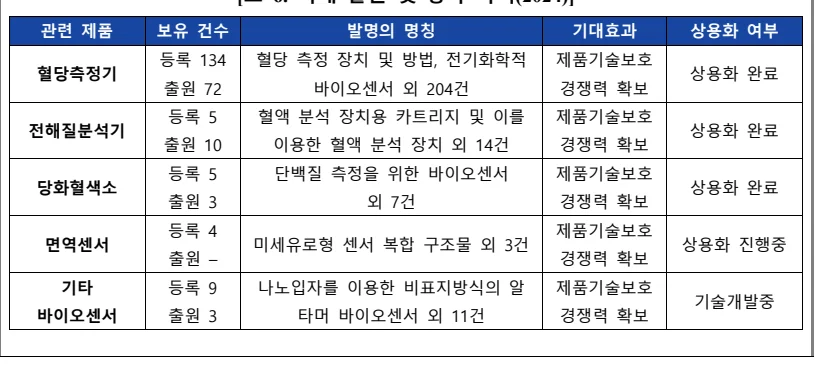
관련 제품 보유 건수 발명의 명칭 기대효과 상용화 여부등록 134 혈당 측정 장치 및 방법, 전기화학적 제품기술보호혈당측정기 상용화 완료출원 72 바이오센서 외 204건 경쟁력 확보등록 5 혈액 분석 장치용 카트리지 및 이를 제품기술보호
전해질분석기 상용화 완료출원 10 이용한 혈액 분석 장치 외 14건 경쟁력 확보등록 5 단백질 측정을 위한 바이오센서 제품기술보호당화혈색소 상용화 완료출원 3 외 7건 경쟁력 확보등록 4 제품기술보호면역센서 미세유로형 센서 복합 구조물 외 3건 상용화 진행중출원 – 경쟁력 확보기타 등록 9 나노입자를 이용한 비표지방식의 알 제품기술보호기술개발중바이오센서 출원 3 타머 바이오센서 외 11건 경쟁력 확보 Appropriability conditions and why U.S. manufacturing firms patent (or not), NBER Working Paper No. 7552, National Bureau of Economic Research, Cambridge, MA, 2000. Nonaka, I., & Takeuchi, H. (1995). The Knowledge-Creating Company. Oxford University Press.
[표 7. 해외 출원 및 등록 특허(2024)] 36
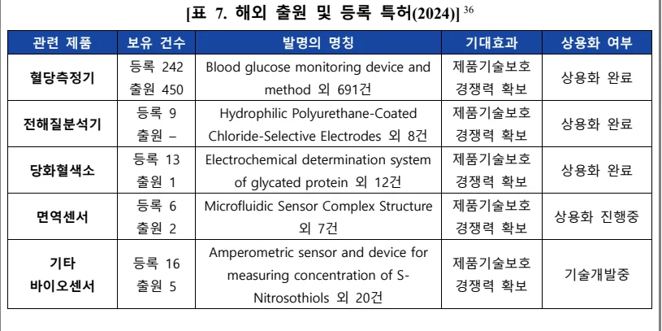
관련 제품 보유 건수 발명의 명칭 기대효과 상용화 여부등록 242 Blood glucose monitoring device and 제품기술보호
혈당측정기 상용화 완료출원 450 method 외 691건 경쟁력 확보등록 9 Hydrophilic Polyurethane-Coated 제품기술보호
전해질분석기 상용화 완료출원 – Chloride-Selective Electrodes 외 8건 경쟁력 확보등록 13 Electrochemical determination system 제품기술보호
당화혈색소 상용화 완료출원 1 of glycated protein 외 12건 경쟁력 확보등록 6 Microfluidic Sensor Complex Structure 제품기술보호
면역센서 상용화 진행중출원 2 외 7건 경쟁력 확보 Amperometric sensor and device for 기타 등록 16 제품기술보호 measuring concentration of S- 기술개발중
바이오센서 출원 5 경쟁력 확보 Nitrosothiols 외 20건
그림 8에 제시된 특허 정보 분석 플랫폼 Wizdomain을 활용한 워드클라우드
분석 결과, ㈜아이센스의 특허는 ‘센서’, ‘혈당’, ‘전극’, ‘바이오센서’, ‘측정기’ 등이
핵심 기술 중심에 자리하고 있다. 이는 ㈜아이센스의 특허가 주로 전기화학 센
서 기반의 혈당측정기 기술에 집중되어 있음을 시각적으로 입증한다.
[그림 8. Wizdomain 특허 검색 워드클라우드]
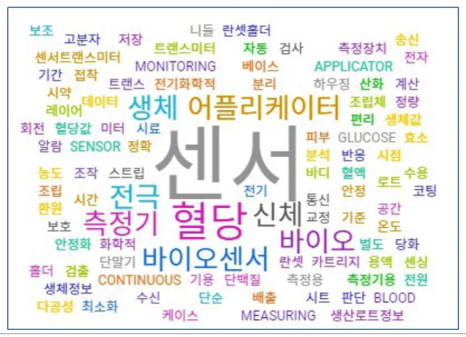
㈜아이센스, 사업보고서, 2024.
전기화학적 바이오센서 기술의 핵심은 정교한 전극 설계와 반응 시약층의 안
정성에 있다. ㈜아이센스는 평면 절연판 위에 작동전극, 유동감지전극, 보조전극
을 배열하고, 전극 간 간섭을 최소화하는 구조를 개발함으로써 전기 신호를 정
밀하고 안정적으로 측정할 수 있는 기술을 확보하였다. 그림 9에서 확인할 수
있듯이, 작동전극과 보조전극 사이의 격리 구조, 전극 연결부의 최적화 설계를
통해 미량의 혈액만으로도 정확한 혈당 측정이 가능하도록 구조적 완성도를 높
였으며, 센서 구조와 시약 조성의 안정성을 극대화하여 고온·저온·다습 등 다양
한 환경에서도 정확도를 유지할 수 있도록 설계되었다. 이러한 기술적 구현은
등록특허 KR0698961B1에 구체적으로 명시되어 있으며, 제품의 성능 신뢰성과
품질 일관성 확보에 실질적으로 기여한 것으로 평가된다.
[그림 9. 전기화학적 바이오센서 스트립의 단면 구조] 37
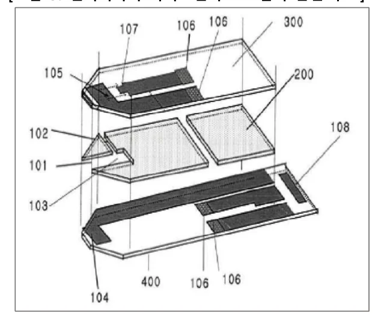
작동전극(104), 보조전극(105), 유동감지전극(107)을 포함한 다층 구조의 전기화학 센서.
각 전극은 절연판 위에 배치되며, 전극 간의 간섭을 줄이기 위한 격리 구조와 전극 연결부(106)의 최적화로 시료 도입부를 통해 유입된 미량의 혈액만으로 시약층(200)에서 반응하여 정밀한 혈당 측정이 가능하도록 구현되었다.
i-SENS Co., Ltd. (2007). Electrochemical biosensor (KR0698961B1). Korean Intellectual Property Office.
이와 같은 센서 기반 기술력에 더해, 연속혈당측정기(CGM) 분야에서는 측정
데이터의 지속적 안정성 확보를 위한 알고리즘 설계가 핵심 요소로 부각된다.
㈜아이센스는 센서 부착 직후 측정값의 초기 불안정성을 자동으로 보정하고, 일
정 기준을 충족한 후에만 혈당 데이터를 전송하도록 설계된 단계별 안정화 알
고리즘을 구현하였다. 해당 알고리즘의 구조는 그림 10에 시각적으로 제시되어
있다. 등록특허 KR2445698B1에 제시된 바와 같이, 1차~3차에 걸친 연속 검증
과정을 통해 데이터의 유효성을 판단하는 방식으로 구체화되었으며, 측정 정확
도와 신뢰도를 동시에 향상시키는 구조적 설계로 기능한다. 이러한 소프트웨어
기반 기술은 CGM의 임상적 안정성을 제고함으로써, 제품 완성도 및 시장 내
차별화 요소로 작용하고 있다.
[그림 10. CGM 초기 데이터 안정화 알고리즘의 흐름도] 38
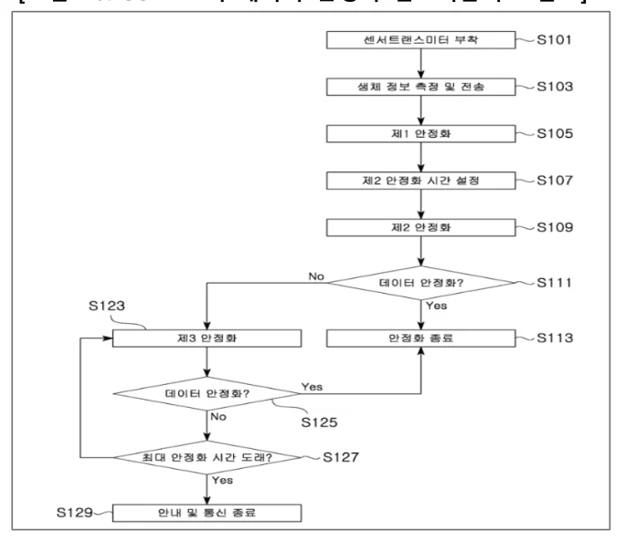
센서 부착 직후 발생하는 데이터 불안정 구간을 자동으로 보정하고, 연속된 검증 절차
(S111, S125, S127)를 통해 유효성 여부를 판단하는 구조. 최대 안정화 시간이 초과된 경
우 안내 및 통신이 종료된다.
i-SENS Co., Ltd. (2022). Method for calibrating sensor of CGMS (KR2445697B1). Korean Intellectual Property Office.
결론적으로 ㈜아이센스는 특허 중심의 전유 전략을 기반으로, 하드웨어 및 소
프트웨어 양면에서 기술 보호와 제품 차별화를 동시에 달성하였다. 이는 기술적
보호수단이 제품 수준의 신뢰성과 경쟁우위로 직결될 수 있음을 보여주며, 이후
공정 내부화 및 품질관리 고도화와 연계되면서 구조적 경쟁력을 한층 강화할
수 있었다. 이와 같은 성과는 기술 기반 중소기업이 전유 전략을 통해 글로벌
시장에서 지속 가능한 경쟁우위를 실현할 수 있음을 뒷받침한다.
5.2 BGM 혁신과 상용화 전략
5.2.1 기존 BGM 시장의 한계
㈜아이센스 창업 당시 자가혈당측정기(BGM) 시장은 기술적 제약과 비용 구
조의 부담으로 인해 사용자 접근성과 활용 효율성 측면에서 구조적 한계를 내
포하고 있었다. 기술적으로는 당시 대부분의 BGM 기기가 정밀한 측정을 위해
상대적으로 많은 혈액량을 요구하였으며, 사용자는 손끝을 깊게 찔러 충분한 채
혈량을 확보해야 했다. 그림 11에서 확인할 수 있듯이 이는 신체적 통증, 감염
위험, 심리적 저항감 등을 초래하며, 특히 하루 수 차례 측정이 필요한 중증 당
뇨 환자의 경우 반복적 채혈은 자가관리 순응도 저하의 주요 원인으로 작용하
였다.
[그림 11. BGM 측정 저항 요인] 39
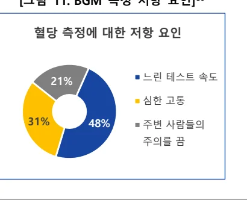
혈당 측정에 대한 저항 요인 21% 느린 테스트 속도심한 고통 31% 48% 주변 사람들의주의를 끔
Mirae Asset Daewoo Research, Profit Normalization Begins, 2018.10.31. 정확도 역시 BGM 기술의 중요한 제약이었다. 초기 전기화학 센서는 온도,
습도, 사용자 조작 등에 민감하게 반응하여 측정값의 일관성과 신뢰도가 낮았으
며, 그 결과 자가측정 결과를 병원 진단과 병행하여 확인하는 사례가 빈번하였
다. 이러한 불확실성은 환자 자가관리의 신뢰성을 저하시키고, 혈당 측정의 실
효성을 감소시키는 요인으로 작용하였다. 또한 혈액 채취 이후 결과가 화면에
표시되기까지 평균 30초~1분 이상이 소요되어, 신속한 혈당 확인이 필요한 사
용자에게는 사용 편의성 측면에서 제약이 컸다.
비용 구조 또한 자가 혈당 측정의 확산을 저해하는 주요 요인이었다. 자가측
정기 보급 초기에 유통되던 수입 제품은, 당시 일반 소비자에게 다소 부담되는
가격대로 형성되어 있었다. 이후 기기 가격이 일정 수준 낮아졌음에도 불구하고
일회용 스트립(strip)의 반복 구매가 필수적이라는 점에서 총소유비용(TCO: Total
Cost of Ownership)은 여전히 높은 수준을 유지했다.
스트립은 제품과 국가에 따라 개당 수 백 원 대의 가격으로 형성되어 있었으
며, 글로벌 선도기업인 Roche의 Accu-Chek 시리즈 기준으로 하루 5~10회 측정
시 연간 비용이 최소 100만 원 40 을 초과할 수 있었다. 이러한 누적 비용 구조는
초기 구매비용 이상의 부담을 유발하며, 만성 자가관리가 요구되는 환자에게 실
질적 경제적 장벽으로 작용하였다. 특히 고령층과 저소득층에서는 자가 혈당 측
정의 확산을 저해하는 구조적 요인으로 기능하였다.
결론적으로, 기존 BGM 시장은 측정 정확성과 사용자 경험의 한계, 비용 누
적 측면에서 기술적·경제적 제약을 동시에 내포하고 있었으며, 이는 기술 혁신
과 가격 접근성 개선을 통한 시장 재편의 필요성을 제기하였다. 나아가 이는 당
뇨 환자의 삶의 질 향상과 만성질환 관리의 사회경제적 비용 절감이라는 공공
적 가치 실현과도 연결되는 과제로 인식될 수 있었다.
기기 가격 및 스트립 비용은 1990년대~2000년대 초반의 온라인 유통 정보와 사용자 사례를 바탕으로 한 비공식 추정치이며 유통 경로에 따라 상이할 수 있음.
5.2.2 저혈량·고속형 BGM으로의 파괴적 혁신
㈜아이센스는 ‘저혈량·고속형 BGM 기술’을 기반으로, 기존 자가혈당측정기시장의 기술적·경제적 장벽을 동시에 해소하며 신시장형 파괴적 혁신을 실현하였다. 창업 직후인 2003년 ‘CareSens’ 브랜드를 출시하며 단순한 성능 향상을 넘어, 기존에 자가측정을 시도하지 않던 비소비자층(non-consumers)을 시장으로 유입시키는 새로운 수요 창출 전략을 전개하였다.
기술적 측면에서, ㈜아이센스 창업 당시 대부분의 BGM 제품은 3~6μL 수준의혈액 채취와 30초 이상의 측정 시간을 요구하였으나, ㈜아이센스는 약 0.5μL 수준의 혈액만으로 5초 이내에 측정이 가능한 기술을 구현하였다. 이러한 극소량· 고속 측정 기술은 한국 최초로 상용화된 기술로, 사용자의 신체적 부담과 시간적 불편을 동시에 경감시킴으로써 일상적 활용성과 자가관리 가능성을 획기적으로 증대시켰다. 반복적 채혈이 불편했던 고령자나, 사용 절차에 익숙하지 않았던 비숙련 사용자에게도 진입 장벽을 낮추는 계기가 되었으며, 기술적 제약으로 자가측정을 회피하던 잠재 수요층의 시장 유입을 가능하게 하였다.
비용 측면에서도 혁신이 병행되었다. BGM 시장은 초기 기기 구매에 따른 고정 비용뿐 아니라 스트립 등 소모품 구매에 따른 반복 비용이 지속적으로 발생하는 구조였다. 이러한 비용 체계는 소비자에게 자가혈당측정기 접근을 제약하는 요인으로 작용하였다. ㈜아이센스는 가격 접근성을 높이는 전략을 통해 비용부담을 완화하였고, 보다 합리적인 가격 구조를 바탕으로 자가측정 실천의 문턱을 낮추었다. 정기적 측정을 기피하던 잠재 사용자층에게 가격 부담을 완화한제품군은 심리적·경제적 제약을 동시에 해소하는 계기가 되었으며, 이를 통해신규 수요층의 시장 유입을 실현하였다.
표 8은 기존 BGM 대비 ‘CareSens’의 주요 기술 성능과 비용 개선 사항을 제
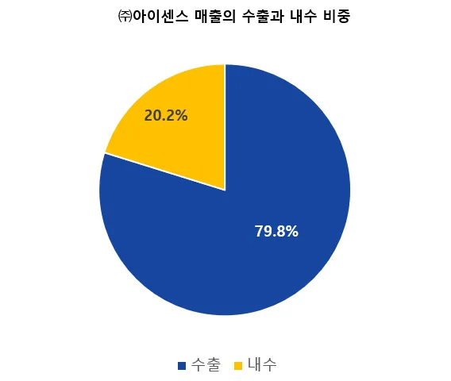
시한다. 이러한 기술·가격 혁신은 비소비자층의 실질적 수요 전환으로 이어졌다. 기존에는 병원 진료나 건강검진을 통해 간헐적으로 혈당을 확인하던 저소득층, 고령자, 경증 당뇨 환자 등도 보다 간편하고 저렴한 자가측정 기기를 선택할 수 있게 되면서, 개인 혈당관리가 생활화되고 새로운 시장이 형성되었다.
[표 8. 기존 BGM과의 주요 성능 및 비용 비교]
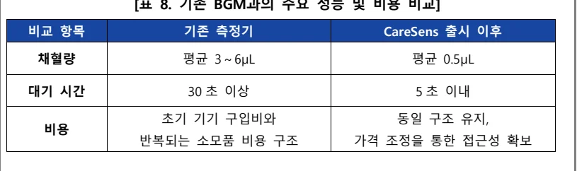
비교 항목 기존 측정기 CareSens 출시 이후채혈량 평균 3～6μL 평균 0.5μL
대기 시간 30 초 이상 5 초 이내초기 기기 구입비와 동일 구조 유지, 비용반복되는 소모품 비용 구조 가격 조정을 통한 접근성 확보
이와 같은 변화는 한국 혈당측정기 시장 구조의 재편으로도 나타났다. ㈜아이
센스는 ‘CareSens’ 시리즈를 출시하며 개발 기술의 내부화 및 제품 상용화를 실
현하였고, 이를 기반으로 한국 시장 내 한국 기업 제품의 비중 또한 점차 확대
되었다. 표 9에 따르면, 2017년을 기점으로 ㈜아이센스는 글로벌 선도 기업인
Roche를 제치고 매출 기준 한국 혈당측정기 시장 1위 기업으로 도약하였다.
[표 9. 한국 혈당측정기 시장 점유율 및 규모 추이 (2014~2019)] 41
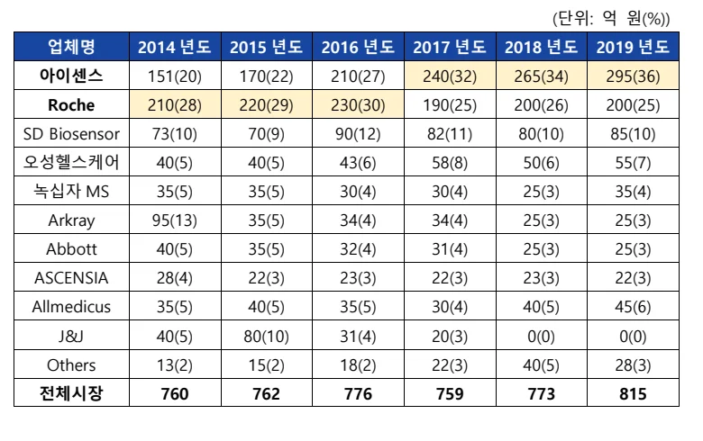
(단위: 억 원(%))
Roche 210(28) 220(29) 230(30) 190(25) 200(26) 200(25)
SD Biosensor 73(10) 70(9) 90(12) 82(11) 80(10) 85(10)
오성헬스케어 40(5) 40(5) 43(6) 58(8) 50(6) 55(7)
녹십자 MS 35(5) 35(5) 30(4) 30(4) 25(3) 35(4)
Arkray 95(13) 35(5) 34(4) 34(4) 25(3) 25(3)
Abbott 40(5) 35(5) 32(4) 31(4) 25(3) 25(3)
ASCENSIA 28(4) 22(3) 23(3) 22(3) 23(3) 22(3)
Allmedicus 35(5) 40(5) 35(5) 30(4) 40(5) 45(6)
J&J 40(5) 80(10) 31(4) 20(3) 0(0) 0(0)
Others 13(2) 15(2) 18(2) 22(3) 40(5) 28(3)
전체시장 760 762 776 759 773 815
이는 단순히 점유율을 확대한 것을 넘어, 시장 구조의 변화를 이끈 중요한 전
강원석, 이상명, “헬스케어 의료기기 산업 내 국산화 성공요인: 혈당산업을 중심으로,” 한국경영학회, 2021.
환점이었다. 한국 혈당측정기 시장에서 한국 기업의 점유율이 지속적으로 증가
할 수 있었던 것은, 기존 고가 외산 제품에 접근하지 못했던 잠재 소비자층이
㈜아이센스의 기술적·경제적 장벽 완화를 통해 시장에 유입된 결과이다.
Christensen(2015)은 파괴적 혁신이 기존 시장에 접근하지 못했던 비소비자를 대
상으로 새로운 수요를 창출하고 시장의 범위를 확장하는 전략 42이라고 설명하였
으며, ㈜아이센스의 사례는 신시장형 혁신의 대표적인 예로 해석될 수 있다.
결과적으로, ㈜아이센스는 정밀 센서 기술, 사용자 친화적 설계, 비용 구조의
개선, 유통 내부화를 결합한 통합적 혁신 전략을 통해 BGM 산업 내 새로운 시
장을 창출하였다. 이는 중소기업이 기술 기반 파괴적 혁신을 통해 산업 내 경쟁
구도를 변화시킨 실증적 사례로 볼 수 있다.
5.2.3 공정 혁신 전략과 글로벌 진출
㈜아이센스는 고성능·저비용이라는 기술 혁신의 성과를 생산 공정과 유통 구
조의 혁신으로 확장하며, 파괴적 혁신의 확장을 실현해왔다. BGM 기술의 신시
장형 파괴적 혁신을 바탕으로, ㈜아이센스는 국내 시장에서 성과를 거두는 동시
에 글로벌 시장으로의 확장을 위한 전략으로 생산 공정의 유연화와 효율적인
글로벌 공급망 관리를 병행하였다. 이를 통해 아이센스는 생산 효율성을 높이
고, 다양한 시장에 맞춰 유연하게 대응할 수 있는 공급 체계를 구축하였다.
㈜아이센스는 브랜드 인지도가 제한적인 초기 글로벌 진출 단계에서,
OEM/ODM 방식과 자체 브랜드 제품을 병행하는 전략을 채택하였다. 그림 12에
서 볼 수 있듯이 전체 생산 물량 중 절반 가량이 OEM/ODM 방식, 나머지는 자
사 브랜드 제품 생산 방식으로 구성되어 있다. 그림 13에 제시된 수출 비중이
전체 매출의 상당 부분을 차지함을 고려할 때, 이러한 공급 전략은 글로벌 시장
진입의 초기 진입 장벽을 낮추고 제품 포트폴리오를 확대하는 데 기여하고 있
음을 보여준다.
C. M. Christensen, M. E. Raynor, and R. McDonald, "What is disruptive innovation?" Harvard Business Review, vol. 93, no. 12, pp. 44–53, 2015.
[그림 12. ㈜아이센스 사업구조] 43
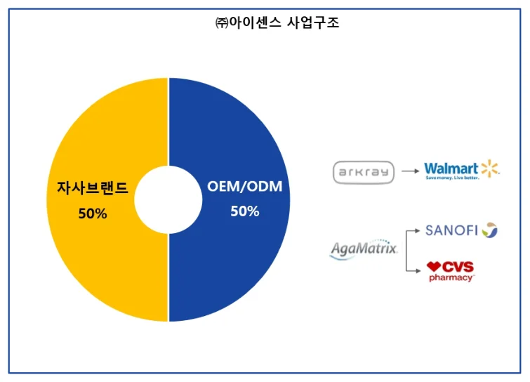
[그림 13. ㈜아이센스 매출 내 수출/내수 비중] 44
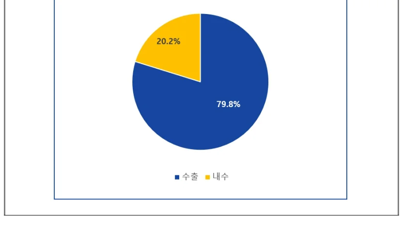
㈜아이센스 Investor Relations 2024 Q4, https://i-sens.irpage.co.kr/ ㈜아이센스 Investor Relations 2024 Q4, https://i-sens.irpage.co.kr/
이러한 전략은 물리적 생산거점의 확장을 기반으로 더욱 견고해졌다. ㈜아이센스는 미국, 독일, 중국 등 주요 해외 시장에 현지 법인 및 생산 기지를 설립하였으며, 중국 생산시설은 BGM 기기와 테스트 스트립을 포함한 대량 생산이가능한 규모로 조성되었다. 이는 제품의 안정적 공급 기반을 확보함과 동시에가격 경쟁력과 품질 신뢰도를 유지할 수 있는 원천이 되었다. BGM 시장의 구조적 특성상 스트립의 반복 구매는 수익의 핵심이므로 이러한 대량 생산 및 공급체계는 락인(lock-in) 효과와 장기 수익성의 확보에 결정적인 역할을 했다.
㈜아이센스는 글로벌 생산 확장과 공급망 효율화를 통해 기술 혁신과 가격혁신을 동시에 실현하였다. 이는 Teece(1986)의 전유성 이론에 근거하여, 보완자산(accompanying assets)의 내부화를 통해 기술 기반의 수익 실현 가능성을 극대화하는 전략으로 해석될 수 있다. ㈜아이센스는 기술 전유성을 공정 효율성, 유통 네트워크, 브랜드 통제력 등 비기술적 자산과 유기적으로 결합함으로써 파괴적 혁신의 글로벌 확장을 실질적 시장 성과로 연결하였다.
결과적으로, ㈜아이센스의 BGM 전략은 생산공정과 유통의 내부화를 통해 기술 전유성을 강화하고, 이를 파괴적 혁신 전략과 결합함으로써 글로벌 시장 확장을 실현한 사례로 평가된다. 이는 단순히 기술을 보유한 기업에서 벗어나, 공급망과 시장 전략을 통합함으로써 혁신을 더욱 강화하고 확장한 중요한 전환점이다.
5.3 CGM 혁신과 상용화 전략
5.3.1 기존 CGM 시장의 한계
㈜아이센스의 CGM 기술 도전은 혈당 측정 시장의 구조적 변화와 산업 트렌드의 전환점을 전략적으로 포착한 결과였다. 기존 BGM 기술은 오랜 기간 당뇨환자들의 혈당 관리를 위한 표준 기술로 활용되어 왔으나, 반복적인 채혈과 수동 측정이라는 한계로 사용자 경험에 제약이 있었다. 반면, CGM 기술은 실시간혈당 변화를 모니터링할 수 있어 당뇨 환자의 삶의 질을 실질적으로 향상시킬수 있는 잠재력을 지닌 기술로 주목받고 있다.
CGM의 가장 큰 장점은 실시간 데이터를 축적할 수 있고 자동 경고 시스템
이 가능하여 당뇨 관리를 보다 효율적이고 일상적으로 활용 가능한 방식으로
전환할 수 있다는 점이다. 또한, 디지털 헬스케어와 결합된 CGM 시스템은 실
시간 데이터 전송, 클라우드 기반 연동 등 디지털 기술과의 연계를 통해 일반
건강 관리 목적으로도 활용 가능성이 확대되고 있다. 최근 Apple과 Garmin 등
주요 디지털 헬스케어 기업들이 CGM 기술을 기반으로 한 제품을 선보인 것은
이러한 시장의 확장을 뒷받침하는 사례이다.
글로벌 CGM 시장은 이러한 기술적 우위와 확장 가능성을 바탕으로 빠르게
성장하고 있다. 그림 14에 제시된 바에 의하면, 2023년 약 89억 달러 규모에서
2030년까지 연평균 16.5%의 성장률(CAGR)이 예상된다. 이는 당뇨 환자 외에도
건강 관리를 원하는 소비자들의 수요 증가와 연관이 있다고 볼 수 있다. CGM
기술은 당뇨 관리뿐 아니라 체중 감량, 고강도 운동, 건강 관리를 포함하는 새
로운 시장의 가능성을 열었다.
[그림 14. BGM과 CGM의 글로벌 시장 규모 전망] 45
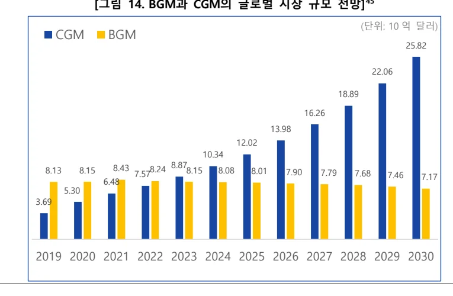
(단위: 10 억 달러)
CGM BGM 25.82 22.06 18.89 16.26 13.98 12.02 10.34
8.43 8.87
8.13 8.15 8.24 8.15 8.08 8.01 7.90 7.79 7.68
7.57 7.46 7.17
6.48 5.30 3.69 2019 2020 2021 2022 2023 2024 2025 2026 2027 2028 2029 2030 Fortune Business Insights, Blood Glucose Monitoring Systems Global Market Analysis, Insights and Forecast. 2023-2030, 2023.
그러나 CGM 기술이 이처럼 성장 가능성과 확장성을 지니고 있음에도 불구하고 시장 진입은 매우 어려운 상황이었다. CGM 기술이 요구하는 정밀한 센서, 복잡한 알고리즘 기술과 규제 승인 등은 모두 시장 진입을 어렵게 만드는 요소였다. 기술적 난이도와 규제 요건은 고도의 연구개발과 대규모 투자를 필요로하여, 소규모 기업들이 진입하기에는 경제적·시간적 장벽이 매우 높았다. 이러한 높은 진입 장벽으로 인해 Dexcom, Abbott, Medtronic과 같은 극소수의 대기업만이 시장에 성공적으로 진입할 수 있었다.
또한, 기존 CGM 제품들은 높은 구매 비용이 주요 장벽으로 작용하며 대중화에 한계가 있었다. ㈜아이센스의 CGM 기기인 'CareSens Air' 출시 당시의 시장내 대표적인 제품들인 Dexcom의 G6와 Abbott의 FreeStyle Libre는 당시로서는 높은 품질의 CGM 기술이 적용되면서 가격이 상대적으로 고가였다. 이와 같은 가격 구조는 혈당 측정기 사용이 필수가 아닌 일반 소비자나 경증 당뇨 환자의접근성을 제한하는 주요 원인으로 작용하였다. 이로 인하여 기존 CGM 시장은주로 빈번한 혈당 측정이 필수인 중증 당뇨 환자가 주요 수요자로 한정되었으며, 일반 소비자를 대상으로 한 수요 확대에는 한계가 있었다.
㈜아이센스는 이러한 기술 전환기의 흐름 속에서 기존 시장에서 상대적으로소외된 잠재 소비자군에 주목하였다. CGM 기술은 고도의 정밀한 센서와 분석알고리즘을 기반으로 한 복합 기술이지만, ㈜아이센스는 BGM 시장에서 축적한기술력과 지속적인 연구개발(R&D)을 통해 해당 기술 기반을 이미 확보하고 있었다. 이를 바탕으로 ㈜아이센스는 CGM 시장에서도 기술 경쟁력을 선보이며기존의 중증 당뇨 환자에만 국한하지 않고, 건강 관리 전반을 위한 도구로서의잠재력을 실현할 수 있는 기회를 포착하여 시장에 진입하였다.
5.3.2 다목적·생활형 CGM으로의 파괴적 혁신
㈜아이센스는 다목적·생활형 CGM(Continuous Glucose Monitoring) 기술을 통해기존 CGM 시장의 기술적·경제적 장벽을 완화하며 신시장형 파괴적 혁신을 실현하였다. 2023년 9월 출시된 ㈜아이센스의 CGM 제품인 ‘CareSens Air’는 한국
최초의 CGM 기술 상용화 사례이다. 이는 기술 성능과 비용 효율성, 사용자 중
심 설계에 기반한 제품 혁신과 더불어 디지털 플랫폼과의 연동 전략을 통해 기
존 시장에서 소외되었던 수요자층을 포괄하고 생활형 혈당관리 시장의 형성과
확산을 이끌었다.
[표 10. 기존 CGM과의 기능 및 사용자 편의성 비교]
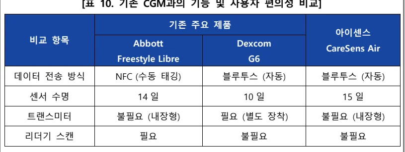
기존 주요 제품아이센스
비교 항목 Abbott Dexcom CareSens Air Freestyle Libre G6
데이터 전송 방식 NFC (수동 태깅) 블루투스 (자동) 블루투스 (자동)
센서 수명 14 일 10 일 15 일
트랜스미터 불필요 (내장형) 필요 (별도 장착) 불필요 (내장형)
리더기 스캔 필요 불필요 불필요
표 10은 ‘CareSens Air’가 기존 제품 대비 기능과 사용자 편의성 측면에서 어
떤 차별성을 갖는지를 비교한 것이다. 기술적 측면에서, ‘CareSens Air’는 낮은 성
능의 저가형이 아니라 일정 수준 이상의 정밀도를 확보한 경쟁력 있는 CGM
기술을 바탕으로 설계되었다. 출시 당시 해당 제품의 평균 절대 상대 오차
(MARD 46 )값은 약 9.8% 47 로, 이는 당시 글로벌 선도 제품들과 유사한 수준으로
평가된다(Dexcom G6: 약 9.8% 48, Abbott Freestyle Libre: 약 9.4% 49). 이러한 성과는지속적인 연구개발(R&D)을 통해 축적한 센서 기술력의 결과로, 기술적 진입 장
벽이 높은 CGM 시장에서 후발주자임에도 비교적 단기간 내 글로벌 수준에 근
접한 제품을 구현할 수 있었던 기반이 되었다.
비용 효율성과 사용자 경험 측면에서도 기존 제품과 구별되는 혁신을 실현하
MARD(Mean Absolute Relative Difference)는 CGM의 혈당 측정 정확도를 나타내는 대표적인 지표로, 수치가 낮을수록 정확도가 높음을 의미한다.
㈜아이센스, CareSens Air 연속혈당측정시스템 제품 가이드(2023)
덱스콤 공식판매처, https://www.cgms.co.kr/main/html.php?htmid=subpage/sub1103.html 문준성, 인슐린 치료를 받는 당뇨병 환자에서 Flash Glucose Monitoring의 활용, 대한당뇨병학회지, 21권, 4호, 184-190쪽, 2020년.
였다. ㈜아이센스는 오랜 기간 축적한 센서 기술과 제조 역량을 바탕으로 가격
경쟁력을 확보하였으며, 트랜스미터를 제거하고 센서와 송신 기능의 일체화 구
조를 설계하여 착용 편의성을 향상시켰다. 또한 센서 부착만으로 실시간 혈당
데이터를 자동 전송하도록 구현하고, 수명을 15일로 연장함으로써 유지관리 효
율성과 사용자 편의성을 동시에 제고하였다. 이는 주요 글로벌 CGM 제품들과
비교 50해도 구조적 단순성과 사용 주기 측면에서 경쟁력 있는 설계로 평가된다.
㈜아이센스는 한국 CGM 사용자들이 널리 활용하는 건강관리 플랫폼인 카카
오헬스케어 및 삼성헬스와 협력하여, 실시간 혈당 데이터를 일상적인 건강관리
서비스와 통합 관리할 수 있는 기반을 마련하였다. 특히 카카오헬스케어와는
CGM 기술 상용화 이전 단계부터 전략적 협업을 구축하였으며, 이러한 선제적
연계는 ㈜아이센스가 자체 보유하지 않은 디지털 플랫폼을 외부 보완 자산으로
활용해 기술 전유성을 강화한 전략으로 해석될 수 있다(Teece, 1986).
이와 같은 플랫폼 연동은 사용자가 별도의 시스템 전환이나 학습 없이, 익숙
한 애플리케이션을 통해 혈당 변화를 직관적으로 인식하고 관리할 수 있도록
하였다는 점에서 기존 의료 중심 CGM 제품이 제공하지 못했던 생활 밀착형
활용성을 적극적으로 실현한 사례로 평가된다. 이는 CGM 기술이 의료 중심의
용도를 넘어 생활 전반의 건강관리 도구로 기능적 범위를 확장하는 과정에서
전략적 역할을 수행하였다.
결론적으로, CareSens Air는 단순히 기존 시장의 하위 세그먼트를 공략한 것이
아니라, 중증 당뇨 환자 중심의 기존 수요 구조에서 벗어나 경증 당뇨 환자와
일반 건강관리 수요자 등 기존에 주요 수요자로 간주되지 않던 비소비자층을
적극 유입시켜 새로운 시장 범주를 창출하였다. Christensen(2015)이 정의한 바와
같이, 신시장형 파괴적 혁신은 기존 기술이나 제품으로는 충족되지 못했던 비소
Dexcom G6은 별도의 트랜스미터를 센서 위에 장착하고 약 3개월마다 교체가 필요하며, Abbott Freestyle Libre는 트랜스미터는 내장되어 있지만 사용자가 일정 시간 간격으로 리더기를 통해 수동 스캔해야 데이터를 확인할 수 있었다. 또한 센서 사용 주기는 Dexcom(10일), Abbott(14일), Medtronic(7일)로 CareSens Air(15일)에 비해 짧았다.
비자를 시장에 유입시키는 과정을 통해 새로운 가치를 창출하는 방식 51이다.
㈜아이센스는 기존 BGM 사업을 통해 축적한 센서 기술, 생산 공정 역량 등
핵심 자산을 내재화하고 이를 연속적으로 전환함으로써 고가 중심의 기존
CGM 시장 구조에 효과적으로 대응할 수 있는 제품 경쟁력을 확보하였다.
CareSens 시리즈를 중심으로 쌓아온 시장 신뢰도와 유통 경험도 CGM 제품의
상용화 과정에서 중요한 기반으로 작용하였다. 이는 R&D를 통해 축적된 기술
역량과 더불어 보완 자산을 유기적으로 결합하며 기존 가치 네트워크의 외부에
서 새로운 수요층을 창출한 사례로, 신시장형 파괴적 혁신의 전형을 보여주는
실증적 사례라 할 수 있다.
5.3.3 품질 인증 전략과 글로벌 진출
글로벌 연속혈당측정기(CGM) 시장은 고도의 기술 장벽과 복잡한 규제 요건
으로 인해 소수의 글로벌 선도 기업이 과점해 왔다. 이러한 시장 구조 속에서
㈜아이센스는 후발 중소기업임에도 불구하고, 2024년 2월 유럽연합(EU)의
CE(Conformité Européenne) 인증을 획득하며 기술 신뢰성과 품질 경쟁력을 국제
적으로 입증하였다.
CE 인증은 제품이 안전성, 건강, 환경 보호 등의 유럽 기준을 충족해야 부여
되는 국제 인증 52 으로, 유럽연합(EU) 및 유럽경제지역(EEA) 내 제품 유통을 위
한 법적 필수 조건이다. 유럽은 미국에 이어 두 번째로 큰 CGM 시장을 형성하
고 있으며, CE 인증은 해당 시장 진입을 위한 핵심 관문으로 작용한다. CGM 제
품이 CE 인증을 획득하기 위해서는 기술적 완성도는 물론, 임상적 유효성과 전
주기적 품질관리 체계, 제품 설계의 적합성 등 복합적인 요건을 충족해야 한다.
㈜아이센스는 글로벌 BGM 시장의 선도 기업이었던 Roche(2024년 7월)보다 앞
선 시점에 CE 인증을 획득하였으며, 한국 기업으로서는 최초로 CGM 제품의
C. M. Christensen, M. E. Raynor, and R. McDonald, "What is disruptive innovation?" Harvard Business Review, vol. 93, no. 12, pp. 44–53, 2015.
European Commission, CE marking, https://single-market-economy.ec.europa.eu/single- market/ce-marking/manufacturers_en.
CE 인증을 받았다. 이는 중소기업임에도 불구하고 기술적 정합성과 규제 대응
역량에서 국제적 경쟁력을 확보했음을 보여준다.
CareSens Air의 국내 출시에 앞서 한국 식품의약품안전처로부터도 연속혈당측
정시스템 품목 허가를 획득 53 하였다. 이는 한국 기업 중 유일한 사례로, ㈜아이
센스가 국제적 기준은 물론 자국 규제 요건까지 모두 충족할 수 있는 기술력과
품질관리 체계를 보유하고 있음을 보여준다. 식약처 인증을 받기 위해서는 혈당
측정의 정확성뿐 아니라 환자 안전성과 임상적 유효성을 입증해야 한다. ㈜아이
센스는 지속적인 연구개발(R&D)을 기반으로 구축한 역량을 통해 이러한 요건
를 충족할 수 있었다.
한편, ㈜아이센스는 지속적인 글로벌 시장 확장을 목표로 세계적으로 가장 엄
격한 인허가 체계 중 하나인 미국 식품의약국(U.S. Food and Drug Administration, FDA) 인증을 준비하고 있다. 이를 위해 한국 정부 주관의 범부처전주기의료기
기연구개발사업에 참여하고 있으며 54 , 이는 R&D를 통해 품질 인증 역량을 체계
화하려는 전략적 노력으로 볼 수 있다. 품질 인증은 단순한 제품 신뢰성 확보를
넘어, 기술 전유성과 글로벌 진입 장벽 대응 역량을 확보하기 위한 핵심 전략으
로 작용하고 있다.
이러한 인증 획득 전략은 외부의 제도적 장치를 통해 기술 보호와 시장 진입
가능성을 구조화함으로써, 장기적 경쟁우위로 이어질 수 있다. 이는 기술 혁신
의 성과가 보완 자산의 통제 여부에 따라 달라진다 55고 본 Teece(1986)의 전유성
이론과도 부합한다. 의료기기 산업에서 CE나 FDA와 같은 인증은 제품의 시장
진입과 확장을 가능하게 하는 핵심 보완 자산으로 기능한다. ㈜아이센스는 품질
인증을 전략적으로 확보하고 내부 R&D 기반 역량과 결합함으로써, 기술 전유
성과 글로벌 시장 확장이라는 두 가지 목표를 동시에 실현하고 있다.
식품의약품안전처, 「의료기기 허가 품목 현황」, 2023년 6월, p.8.
범부처전주기의료기기연구개발사업단, 스마트 헬스케어 시스템 구축을 위한 초소형 연속혈당측정기 개발, KMDF 공식 홈페이지, https://www.kmdf.org/sub060102/view/page/2/id/2034. D. J. Teece, Profiting from technological innovation: Implications for integration, collaboration, licensing and public policy, Research Policy, vol. 15, no. 6, pp. 285–305, 1986.
제 6 장 결론
6.1 연구 결과
본 연구는 연구개발(R&D) 기반의 기술 전유성과 신시장형 파괴적 혁신 이론을 분석 틀로 설정하여, 고도의 기술 장벽과 강력한 전유성 구조로 인해 글로벌대기업이 과점해온 혈당측정기 시장에서 후발 중소기업인 ㈜아이센스가 기술기반의 경쟁우위를 확보하고 글로벌 시장으로 확장할 수 있었던 전략을 실증적으로 분석하였다. 이를 통해 ㈜아이센스가 기술 혁신을 바탕으로 시장에 진입하고 확장해 나간 전략적 과정을 다음과 같이 정리할 수 있다.
전유성 이론의 관점에서, ㈜아이센스는 R&D 기반의 핵심 기술을 특허 중심으로 전유함으로써 경쟁 기업의 모방을 방지하였다. 또한, 기술 라이선싱 중심의 수익 구조에서 자사 브랜드 기반의 생산·유통 체계로 전환함으로써 기술혁신의 수익 실현을 내부화하였다. 이러한 전략은 진입장벽이 높은 산업에서 후발중소기업이 기술 중심의 전유 구조를 어떻게 활용할 수 있는지를 보여주는 실증적 사례이다. R&D 기반의 기술 전유성 전략은 독자적인 기술 기반 경쟁력을갖추고 시장에 성공적으로 진입하는 데 핵심적인 요인으로 작용하였다.
신시장형 파괴적 혁신 이론의 관점에서, ㈜아이센스는 기술적 복잡성과 비용부담 등 기존 제품의 제약으로 인해 시장에서 배제되어 왔던 비소비자층을 새롭게 시장에 유입시키며 시장의 외연을 확장하였다. 자가혈당측정기(BGM) 시장에서는 사용자 편의성과 가격 접근성을 개선한 제품을 통해, 반복 채혈과 복잡한 사용 절차 등으로 자가측정을 기피하던 소비자층을 실질적 수요층으로 전환하였다. 연속혈당측정기(CGM) 시장에서는 정밀도와 편의성을 확보하면서도 비용 진입장벽을 완화함으로써, 고가·고성능 중심의 제품 구조로 인해 접근이 어려웠던 일반 건강관리 목적의 사용자들을 새롭게 포괄하였다. 이는 기술과 비용구조의 혁신을 통해 비소비자층을 실질적 소비자로 전환한 전략으로, 신시장형파괴적 혁신 이론이 실제 시장에서 적용된 사례로 평가될 수 있다.
전유성과 신시장형 파괴적 혁신 전략은 공정 혁신 및 품질 인증 전략과 결합함으로써, 글로벌 시장 진입의 구조적 장벽을 효과적으로 극복하는 데 기여하였다. OEM/ODM과 자사 브랜드 생산을 병행하는 전략을 통해 초기 시장 진입의유연성을 확보하였으며, 생산거점의 확장은 공급 안정성과 락인 효과를 강화하는 기반이 되었다. 또한 유럽 CE 인증과 한국 식약처 인증과 같은 품질 인증을통해 기술 신뢰성과 규제 대응력을 갖추었고, 보완 자산을 구축하는 동시에 해외 시장에서의 확장 가능성도 제고할 수 있었다.
이상의 분석을 종합하면, ㈜아이센스 사례는 전유성 이론과 신시장형 파괴적혁신 이론이 실제 기업 전략에 어떻게 적용되는지를 실증적으로 보여주는 대표적 사례라 할 수 있다. 본 연구는 기술적 진입장벽과 과점 구조가 견고한 글로벌 의료기기 시장에서도 후발 중소기업이 경쟁우위를 확보하고 시장의 외연을실질적으로 확장할 수 있음을 입증하였다.
6.2 시사점
본 연구는 전유성 이론과 신시장형 파괴적 혁신 이론에 기반하여, ㈜아이센스의시장 진입 전략을 실증적으로 분석하였다. 이를 바탕으로, 후발 중소기업이높은 진입장벽과 전유성 구조가 강한 산업에서 기술혁신을 통해 어떤 전략적함의를 도출할 수 있는지를 다음과 같이 정리하고자 한다.
첫째, 기술혁신이 실질적 성과로 이어지기 위해서는 기술 전유성과 상용화 역량의 결합이 필수적이다. 핵심 기술을 확보하는 것에 그치지 않고, 이를 특허, 생산 인프라, 브랜드 등 다양한 전유 수단으로 보호하며 기술의 수익을 외부에의존하지 않는 내부화 전략으로 연결해야 한다. ㈜아이센스는 R&D 기반의 기술 전유 구조를 바탕으로, 라이선싱 중심에서 자사 브랜드 기반의 생산·유통 체계로 전환함으로써 기술혁신의 수익을 내부화하고 장기적인 시장 경쟁력을 확보하였다.
둘째, 신시장형 파괴적 혁신은 단순한 저가·저성능 제품으로는 실현될 수 없으며 일정 수준 이상의 기술 정밀도와 사용자 접근성을 동시에 충족할 때 가능하다. ㈜아이센스는 지속적인 R&D를 통해 획득한 독자적인 센서 기술과 가격경쟁력을 결합함으로써, 기존 시장에서 배제되었던 새로운 수요층을 새로운 시장으로 유입시키는 데 성공하였다. 이는 신시장형 파괴적 혁신이 단순한 기술대체가 아닌, 비소비자층의 흡수와 새로운 사용 맥락의 창출을 통해 실현된다는점을 잘 보여준다. 즉, 파괴적 혁신은 기술 성능에 국한하지 않고, 시장 접근성과 사용자 가치의 확장성까지 포함해야 한다.
셋째, 고도화된 글로벌 규제 환경 속에서 기술 혁신의 상용화를 위해서는 R&D 초기 단계부터 규제 대응과 국제 인증 획득 가능성을 내재화하는 전략이필요하다. ㈜아이센스는 R&D 기획 단계에서부터 글로벌 인증 기준을 설계에반영한 결과 CGM 제품 개발 과정에서 고난이도의 품질 인증을 비교적 빠르게획득하였다. 이는 의료기기 산업처럼 인증과 규제가 기술 상용화의 핵심 관문으로 작용하는 산업군에서 중요한 시사점을 제공한다. 기술 완성도만으로는 경쟁우위를 확보하기 어려운 산업에서, 설계 초기부터 규제 환경을 인지하고 대응하는 역량이 경쟁력의 핵심이 될 수 있음을 시사한다.
넷째, 기초연구는 반드시 응용을 전제로 하지 않지만, 향후 상용화가 이루어질 경우 그 과정에서 기술 확산이나 전략적 전환을 통한 시장 확대가 가능하다.
㈜아이센스는 기초과학 연구를 통해 혈당측정 센서 기술의 정밀도와 일관성을확보하며 BGM 제품화를 실현했고, 이후 CGM으로의 기술 전환과 시장 확장을이끌어냈다. 이는 기초연구 성과가 응용 단계를 거쳐 제품 다양화와 시장 확대로 이어질 수 있음을 보여주며, 장기적으로 기술 기반 기업이 산업 내 위치를전략적으로 전환할 수 있는 가능성을 시사한다.
제 7 장 연구의 한계 및 향후 과제
본 연구는 R&D 기반 기술 전유성과 신시장형 파괴적 혁신 이론을 바탕으로, ㈜아이센스가 글로벌 혈당측정기 시장에서 기술 기반의 경쟁우위를 확보하고시장을 확장해온 전략을 실증적으로 분석하였다. 그러나 이러한 분석은 다음과같은 측면에서 한계를 지니며, 향후 연구를 위한 보완 과제를 제시할 필요가 있다.
첫째, CGM 제품에 대한 장기적인 성과 분석이 제한적이다. 본 연구는 ㈜아이센스가 2023년 출시한 CGM 제품인 ‘CareSens Air’의 기술적 차별성과 초기 시장 진입 성과를 중심으로 분석을 수행하였으나, 실제 글로벌 시장에서의 매출성장, 사용자 재구매율, 건강관리 플랫폼으로의 확장성과 같은 지표들은 아직충분히 누적되지 않은 상태이다. 향후 장기적인 수익성과 사용자 기반 확대에대한 후속 연구가 필요하다.
둘째, 단일 기업 사례에 기반한 분석이라는 점에서 일반화 가능성에 한계가존재한다. 본 연구는 ㈜아이센스의 전략과 성과를 중심으로 구체적인 혁신 과정을 심층적으로 고찰하였으나, 분석 대상이 단일 기업에 국한되어 있어 동일 산업 내 다른 기업이나 유사 구조를 지닌 타 산업에 결과를 일반화하는 데에는일정한 한계가 따른다.
셋째, 본 연구는 의료기기 산업의 규제, 보험 체계, 정책 변화 등 외부 제도환경 요인을 분석 범위에 포함하지 않았다. 연구의 초점이 기업의 내부 전략과기술 혁신 과정에 있었기 때문이며, 향후 연구에서는 다양한 제도적 맥락을 통합적으로 고려한 분석이 필요하다.
이러한 한계에도 불구하고, 본 연구는 기술 중심 중소기업이 진입장벽이 높은산업에서 전유성과 파괴적 혁신을 통해 실질적인 경쟁력을 확보할 수 있음을보여주는 경험적 사례를 제시하였다는 점에서 의의를 지닌다. 향후 연구에서는이러한 한계를 보완하며 장기적인 시장성과 분석, 다양한 산업·국가·정책 맥락에서의 비교 사례 연구 등을 통해 더욱 심도 깊고 확장 가능한 연구로 발전시킬수 있을 것이다.
Appendix Appendix 1. 한국 의료기기산업 8대 중점 분야 56 중분류(8대 분야) 정의영상·계측 영상·계측 의료기기에 해당하는 품목치과 치과용 기기·재료에 해당하는 품목의료용로봇 의료용 로봇에 해당하는 품목인체삽입형 인체삽입용 의료기기에 해당하는 품목치료기기·재료수입의존도가 높으며 필수 의료기기에 해당하는보건안보품목고령화 고령친화제품, 복지용구 등으로 관리되는 품목체외진단(IVD) 체외진단의료기기법으로 관리되는 품목소프트웨어 포함 디지털헬스 의료기기에 해당하디지털헬스는 품목
한국보건산업진흥원, 제1차 의료기기산업 실태조사, 2024.
Appendix 2. 체외진단 의료기기의 기술적 분류 57 구분 특징 및 진단가능 질병
- 항원-항체 반응을 이용하여 각종 암마커, 감염성질환, 갑상선
면역 화학적 진단 기능, 빈혈, 알레르기, 임신, 약물남용 등의 매우 다양한 질환진단과 추적에 이용자가 혈당 측정 - 당뇨환자가 혈당 자가 진단에 활용
- 주로 면역학, 임상화학 분야에서 검사하던 것을 환자 옆에서
현장진단 즉각 검사가 가능 하도록 함으로써 치료효과를 높이는데 이용
- 혈액가스 검사, 심근경색 검사, 혈액응고 검사 등에 이용
- 인체나 바이러스 등의 유전자 정보를 담고 있는 핵산(DNA,
RNA)을 검사하는 것분자진단
- 인간 면역결핍 바이러스(HIV), 암유전자, 유전질환 검사 등에
이용
- 백혈병, 빈혈, 자가면역질환 등을 진단하거나 치료 후 추적
혈액진단및 항응고 치료 모니터링에 이용
- 혈청, 혈장, 소변 등 체액 안의 성분을 화학반응을 이용하여
측정
임상 미생물학 진단 - 혈당, 전해질, 효소, 호르몬, 지질 등을 측정하여 당뇨, 간질환, 신장 질환, 암 표지자, 동맥 경화, 임신, 불임 등 매우 다양한 질환 진단과 추적에 이용
- 유리판 위에 체액을 도말하거나 생체조직을 염색한 후 현미
지혈진단경을 통해 분석함으로써 암 조직이나 세포를 관찰하여 진단
- 인체에서 유래된 검사 대상물을 이용하여 바이러스, 세균, 진
균 등을 배양, 동정하고 세균의 항생제 감수성을 검사하여 감조직진단염원을 찾아내고 그 치료 약제의 가이드 라인을 제공
- 각종 감염에 의한 질병의 진단과 추적에 이용
연구성과실용화진흥원, 체외 진단기기 시장 동향, 2016.
Reference
[1] 김지운, 강미란, 글로벌 체외진단(IVD) 동향, 한국바이오협회 바이오경제연구센터, 제157호, 2022년 7월.
[2] 한국식품의약품안전처, 의료기기안심책방,
https://emedi.mfds.go.kr/contents/MNU2025.
[3] Pavitt, K. (1984). Sectoral patterns of technical change: Towards a taxonomy and a theory. Research Policy, 13(6), 343–373.
[4] 과학기술정책연구원(STEPI), 중소기업의 오픈 이노베이션: 모델, 방법론, 정책을 중심으로, STEPI 정책자료 2008-12, 2008.
[5,45] Fortune Business Insights, Blood Glucose Monitoring Systems Global Market Analysis, Insights and Forecast. 2023–2030, 2023. [6] DS투자증권 리서치센터, 게임 체인저를 찾아서(2023.6.1.3), 2023.
[7] J. S. Bain, Barriers to New Competition: Their Character and Consequences in Manufacturing Industries, Harvard University Press, Cambridge, MA, 1956.
[8] Time Lag of Glucose From Intravascular to Interstitial Compartment in Humans, Diabetes, Volume 62, Issue 12, 2013.
[9] 한국IR협의회, 한국기업데이터, 기술분석보고서 2019-30, 2019.
[10,43,44] ㈜아이센스 Investor Relations 2024 Q4, https://i-sens.irpage.co.kr/ [11] ㈜아이센스 사업보고서, 2011~2024.
[12] C. K. Prahalad and G. Hamel, "The core competence of the corporation," Harvard Business Review, vol. 68, no. 3, pp. 79–91, 1990. [13,16,42] C. M. Christensen, The Innovator’s Dilemma: When New Technologies Cause Great Firms to Fail, Harvard Business School Press, Boston, 1997.
[14] C. M. Christensen and R. S. Rosenbloom, "Explaining the attacker's advantage: Technological paradigms, organizational dynamics, and the value network," Research Policy, vol. 24, no. 2, pp. 233–257, 1995. [15] C. M. Christensen and J. L. Bower, "Customer power, strategic investment, and the failure of leading firms," Strategic Management Journal, vol. 17, no. 3, pp. 197–218, 1996.
[17] C. M. Christensen and M. E. Raynor, The Innovator’s Solution: Creating and Sustaining Successful Growth, Harvard Business School Press, Boston, MA, 2003.
[18] C. M. Christensen, S. D. Anthony, and E. A. Roth, Seeing What’s Next: Using the Theories of Innovation to Predict Industry Change, Harvard Business School Press, Boston, MA, 2004.
[19] E. Danneels, "Disruptive technology reconsidered: A critique and research agenda," Journal of Product Innovation Management, vol. 21, no. 4, pp. 246–258, 2004.
[20] C. Markides, "Disruptive innovation: In need of better theory," Journal of Product Innovation Management, vol. 23, no. 1, pp. 19–25, 2006.
[21] C. M. Christensen, "The ongoing process of building a theory of disruption," Journal of Product Innovation Management, vol. 23, no. 1, pp. 39–55, 2006.
[22] G. M. Schmidt and C. T. Druehl, "When is a disruptive innovation disruptive?" Journal of Product Innovation Management, vol. 25, no. 4, pp. 347–369, 2008.
[23] D. Yu and C. C. Hang, "A reflective review of disruptive innovation theory," International Journal of Management Reviews, vol. 12, no. 4, pp. 435–452, 2010.
[24,42,51] C. M. Christensen, M. E. Raynor, and R. McDonald, "What is disruptive innovation?" Harvard Business Review, vol. 93, no. 12, pp. 44– 53, 2015.
[25,32,55] D. J. Teece, Profiting from technological innovation: Implications for integration, collaboration, licensing and public policy, Research Policy, vol. 15, no. 6, pp. 285–305, 1986.
[26,34] R. C. Levin, A. K. Klevorick, R. R. Nelson, and S. G. Winter, Appropriating the returns from industrial research and development, Brookings Papers on Economic Activity, vol. 1987, no. 3, pp. 783–831, 1987.
[27,34] W. M. Cohen, R. R. Nelson, and J. P. Walsh, Protecting their intellectual assets: Appropriability conditions and why U.S. manufacturing firms patent (or not), NBER Working Paper No. 7552, National Bureau of Economic Research, Cambridge, MA, 2000. [28] A. Arora, A. Fosfuri, and A. Gambardella, Markets for Technology: The Economics of Innovation and Corporate Strategy, MIT Press, Cambridge, MA, 2001.
[29] D. J. Teece, “Reflections on ‘Profiting from innovation’”, Research Policy, vol. 35, no. 8, pp. 1131–1146, 2006.
[30] ㈜아이센스, 사업보고서, 2021~2024.
[31] M. Cohen, E. Boyle, C. Delaney, J. Shaw, “A comparison of blood glucose meters in Australia”, Diabetes Research and Clinical Practice, vol. 71, no. 2, pp. 113-118, Feb. 2006.
[33] ㈜아이센스, 사업보고서, 2012~2024.
[35] Nonaka, I., & Takeuchi, H. (1995). The Knowledge-Creating Company. Oxford University Press.
[36] ㈜아이센스, 사업보고서, 2024.
[37] i-SENS Co., Ltd. (2007). Electrochemical biosensor (KR0698961B1). Korean Intellectual Property Office.
[38] i-SENS Co., Ltd. (2022). Method for calibrating sensor of CGMS (KR2445697B1). Korean Intellectual Property Office.
[39] Mirae Asset Daewoo Research, Profit Normalization Begins, 2018.10.31.
[41] 강원석, 이상명, “헬스케어 의료기기 산업 내 국산화 성공요인: 혈당산업을 중심으로,” 한국경영학회, 2021.
[47] ㈜아이센스, CareSens Air 연속혈당측정시스템 제품 가이드(2023)
[48] 덱스콤 공식판매처, https://www.cgms.co.kr/main/html.php?htmid=subpage/sub1103.html [49] 문준성, 인슐린 치료를 받는 당뇨병 환자에서 Flash Glucose Monitoring의 활용, 대한당뇨병학회지, 21권, 4호, 184-190쪽, 2020년.
[52] European Commission, CE marking, https://single-market-economy.ec.europa.eu/single-market/ce- marking/manufacturers_en.
[53] 식품의약품안전처, 「의료기기 허가 품목 현황」, 2023년 6월, p.8.
[54] 범부처전주기의료기기연구개발사업단, 스마트 헬스케어 시스템 구축을 위한 초소형 연속혈당측정기 개발, KMDF 공식 홈페이지, https://www.kmdf.org/sub060102/view/page/2/id/2034.
[56] 한국보건산업진흥원, 제1차 의료기기산업 실태조사, 2024.
[57] 연구성과실용화진흥원, 체외 진단기기 시장 동향, 2016.
[58] Kim, K. S., Lee, S. H., Yoo, W. S., & Park, C. Y. (2024). Accuracy and Safety of the 15-Day CareSens Air Continuous Glucose Monitoring System, DIABETES TECHNOLOGY & THERAPEUTICS.
[59] 이병헌, 강원진, 전호일. (2008). 연구기반 스핀오프 벤처기업의 성장과정 및 성공요인에 관한 탐색적 사례연구: ㈜아이센스, 한국벤처창업학회.
[60] 연구개발특구진흥재단. (2021). 글로벌 시장동향보고서 의료용 인공지능(AI) 시장.
[61] 한국바이오협회. (2021). 최신동향브리프 Vol. 50 글로벌 체외진단의료기기(IVD) 시장 현황 및 전망, 한국바이오협회정보서비스.
[62] 고원규, 아이센스 기술분석보고서, ㈜NICE디앤비, 2021 [63] 신동진, 아이센스 기술분석보고서, 한국기업데이터, 2019 [64] 한국보건산업진흥원, 2024 글로벌 보건산업 시장규모, 2024 [65] 김충현, 기업분석보고서, 미래에셋증권 리서치센터, 2023.11.06.
[66] C.-H. Park, Y. Youn, C.-Y. Park, and M.-J. Kwon, "Evaluation of new blood glucose monitoring system according to ISO 15197 and the Food and Drug Administration standard," Annals of Clinical and Laboratory Science, vol. 54, no. 4, pp. 547–552, 2024.
[67] https://n.news.naver.com/mnews/article/001/0003637168?sid=102 [68] http://www.kst1d.org/cgm.html [69] https://platum.kr/archives/169757